1.0 SONAR Low-Level Architecture
Low-level architecture requirements for SONAR (SIEM-Oriented Neural Anomaly Recognition) subsystem.
1.1 SONAR training pipeline sequence LARC-019
Training workflow sequence diagram
The training pipeline retrieves historical alerts, builds the feature matrix and its categorical vocabulary, trains the scenario's detector backend (mvad by default, or pca, ewma) and saves the model directory. Every training command (sonar train with or without a scenario, and the training phase of sonar scenario) runs this one sequence (_execute_training_phase in sonar/cli.py).
![UML Diagram]( "UML")
With the datastream sink or shipping enabled (and not in debug mode), training then installs the data stream's index templates and ISM policy for the scenario (SWD-024).
Key operations
| Component | Operation | Input | Output |
|---|---|---|---|
| Scenario Loader | Parse and validate YAML | Scenario file path | UseCase |
| Data Provider | Fetch alerts | Time range, alert_filter |
Raw alerts (JSON); only the fields the features read, SONAR's own alerts excluded |
| Feature Builder | Build features | Raw alerts | Time-series matrix, categorical vocabulary |
| ModelEngine | Train | Feature matrix, vocabulary | Trained backend, metadata (feature contract, training record) |
| Detector backend | Fit | Feature matrix | Backend state (mvad: training pre-flight with sonar/training_plan.py) |
| File System | Persist model | Metadata and backend state | Model directory (no pickle) |
Error handling
- Insufficient data: no alerts with a valid timestamp, or fewer buckets than the backend needs (for
mvad: one optimiser update and a validation window under the configured parameters; forpcaandewma: a fixed minimum): training fails, saves nothing and exits with status 1, stating the required bucket count. Formvad, fewer updates thanmin_gradient_stepsonly warns. - Invalid parameters: an unknown key in
extra_paramsis an error; unknown keys elsewhere in configuration and scenario files are ignored with a warning. - Indexer failures: every indexer request has a timeout (
wazuh.timeout_seconds); a failed connection check or search ends training with status 1. Training does not retry. - Model persistence: the model is written to a staging directory and swapped in only when complete, so a failed save leaves the previous model in place.
Related documentation
- Training sequence diagram:
docs/manual/sonar_docs/uml-diagrams.md#training-workflow
Parent links: SRS-072 SONAR training adequacy, SRS-073 SONAR regular time axis and volume features, SRS-074 SONAR feature contract between training and detection, SRS-079 SONAR runs as a standalone package with safe, interchangeable models, SRS-086 SONAR reads every matching alert through one indexer client
Child links: SWD-022 SONAR class structure and relationships, SWD-023 SONAR feature engineering design, SWD-024 SONAR anomaly delivery design, SWD-025 SONAR debug mode design, SWD-043 SONAR detector backend contract, SWD-044 SONAR paths, model naming and model directory format
1.2 SONAR detection pipeline sequence LARC-020
Detection workflow sequence diagram
The detection pipeline loads a trained model, scores the complete buckets of the detection window, and delivers the new anomalies to the configured sinks. Every detection command (sonar detect with or without a scenario, and the detection phase of sonar scenario) runs this one sequence (_run_single_detection in sonar/cli.py); realtime mode repeats it once per bucket.
![UML Diagram]( "UML")
Detection modes
detection.mode is read only by sonar scenario; sonar detect always runs once.
| Mode | Behavior |
|---|---|
| historical, batch | One detection run over the window, then exit |
| realtime | Repeat the run once per bucket, after the bucket has ended plus ingest_delay_seconds (or every polling_interval_seconds if set), until stopped |
In realtime mode a failed run is retried after 10 s, doubling per consecutive failure and capped at one bucket; after max_consecutive_failures consecutive failures SONAR exits with status 1. A run with too little data is not a failure. SONAR itself does not schedule periodic one-shot runs; a scheduler (cron, a container restart policy) may.
Scored window
Detection scores the complete time buckets of the last lookback_minutes; the current bucket, still filling, is never scored, nor is one that ended less than ingest_delay_seconds ago. The model needs a fixed number of earlier buckets as context before the first bucket it can score (derived from its backend's window), so the pipeline fetches them as well and reports only buckets inside the scored window. In debug mode the local file is scored as a whole, without a time range.
Post-processing steps
- Thresholding: Keep buckets that the backend flags and whose severity (0–1) reaches the configured minimum (
threshold), if one is set - Consecutive filtering: Keep only runs of at least
min_consecutivesuch buckets, evaluated over the whole scored window before the watermarks are applied - Enrichment: Add
anomaly_id(from the scenario ID and bucket start), scenario and model names, severity, raw score, top contributors with their values, andanomaly_confidence - Delivery: Each sink receives the documents after its own watermark; the
wazuh,jsonlandstdoutsinks send the SONAR event derived from the document, the indexer sinks store the document (SWD-024). Debug runs (output.debug_sinks) and dry runs (a JSON-lines file) use no watermark
Exit status
A one-shot run exits with 0 when the window was scored and its new anomalies delivered, 2 when there was too little data to score it (no alerts, or fewer buckets than the model needs), and 1 on an error, including a delivery in which every sink with anomalies to deliver failed and no fallback took them all. When some sinks fail and others succeed, the run logs a warning and exits with 0; the failed sinks catch up on a later run.
Related documentation
- Detection sequence diagram:
docs/manual/sonar_docs/uml-diagrams.md#detection-workflow
Parent links: SRS-074 SONAR feature contract between training and detection, SRS-075 SONAR detection window and anomaly reporting, SRS-076 SONAR does not write security alerts, SRS-077 SONAR delivers each anomalous bucket at most once per scenario, SRS-078 SONAR reports anomalies to the Wazuh manager, SRS-086 SONAR reads every matching alert through one indexer client
Child links: SWD-022 SONAR class structure and relationships, SWD-023 SONAR feature engineering design, SWD-024 SONAR anomaly delivery design, SWD-025 SONAR debug mode design, SWD-043 SONAR detector backend contract, SWD-044 SONAR paths, model naming and model directory format, SWD-046 SONAR anomaly document schema, SWD-037 RADAR-SONAR integration design
1.3 SONAR evaluation and calibration workflow LARC-032
sonar evaluate measures a scenario's detection quality against labelled data and calibrates its decision rule (SRS-080). It works offline, on alert files, and scores SONAR's own backends and the exported results of another detector with one implementation, so that the comparison is fair. This item describes the components and the order in which they run; the metric definitions and file formats are in SWD-045.
Workflow
Components
| Component | Implementation | Role |
|---|---|---|
| Data generators | sonar/test_data/generate_resource_data.py, sonar/test_data/generate_attack_data.py, sonar/test_data/labelled_splits.py |
With --evaluation, write a training file of normal data and a validation and a test split, each normal context followed by events injected at random, non-overlapping times, plus a label file per split; the seed (--seed, default 42) makes them reproducible |
| Format converter | sonar/test_data/radar_format.py |
Rewrites the resource splits as RADAR collector events, keeping timestamps and hosts so the label files stay valid |
| Command | sonar/cli.py (cmd_evaluate, _sonar_detections) |
Validates the inputs, runs SONAR's backend or loads external results, calibrates, scores and writes the report |
| Scenario configuration | sonar/cli.py (load_scenario_for_phase, apply_agent) |
The same configuration path as sonar train and sonar detect: features, backend, window, threshold, min_consecutive |
| Model engine | sonar/engine.py, sonar/backends/ |
Trains the scenario's backend in memory, with the same pre-flight check as sonar train, and predicts each split |
| Evaluation | sonar/evaluation.py |
Labels, detections, alarm grouping, metrics, calibration and the Markdown summary |
| Decision rule | sonar/pipeline.py (select_anomalies) |
The rule detection applies; evaluation reuses it so an evaluated setting behaves the same in production |
Behaviour
- Inputs. Exactly one of
--scenario(with--train-fileand--test-file) and--detectionsis given;--test-labelsis always required. Calibration needs both validation data (--validation-fileor--validation-detections) and--validation-labels. Any other combination fails before work starts. - SONAR's detections. The backend (the scenario's, or
--backend) is trained on the lasttraining.lookback_hoursof the training file; the model is not saved. Each split is scored as a whole, as in debug mode, so its firstcontext_bucketsbuckets serve as context only; a split shorter than the backend's minimum is an error. Like debug mode, the files are not filtered byalert_filter; with--agent, only that agent's alerts are kept, and the model and report are named after it. - External detections. Results of the OpenSearch anomaly detection plugin (an anomaly when
anomaly_gradeis above 0, the grade as severity) or generic interval records are loaded; their own configured decision rule is not known, so the configured run uses no threshold and runs of one. - Calibration searches a fixed grid of thresholds and run lengths on the validation split only, choosing the best F1 within the false-alarm budget (
--max-false-alarms-per-day, default 5). The test split is then scored with the configured and with the calibrated values; the test precision of the calibrated values is the scenario'sanomaly_confidence. - Output.
<name>.json(the full record) and<name>.md(a summary, also printed) are written to--output-dir;<name>defaults to<scenario_id>-<backend>. Exit status 0 on success, 1 on any error, including too little training data.
Recorded reports of the shipped scenarios are kept as test evidence in docs/specs/trp/assets/sonar-evaluation/.
Design constraints
- One scoring path. SONAR's verdicts and external results become the same interval type and go through the same scoring function; there is no SONAR-only path.
- No calibration on the test split. Values are chosen on the validation split and reported on the test split, so the reported precision is not fitted to the data it is measured on.
- No network. Evaluation reads local files only; live data reaches it through
sonar export(LARC-033).
See: docs/manual/sonar_docs/evaluation-guide.md
Parent links: SRS-080 SONAR detection quality is measured against labelled data
Child links: SWD-045 SONAR evaluation metrics, label and report formats
1.4 SONAR export and RADAR comparison workflow LARC-033
SONAR and RADAR's linux_resource_utilization detector are compared on the same events, features and labelled anomalies (SRS-081). The packaged scenario sonar/scenarios/radar_linux_resource_utilization.yaml reads RADAR's collector events; --agent gives one model per host, as RADAR's detector has; sonar export takes a labelled window and RADAR's results out of a live indexer; sonar evaluate (LARC-032) scores both detectors.
Workflow
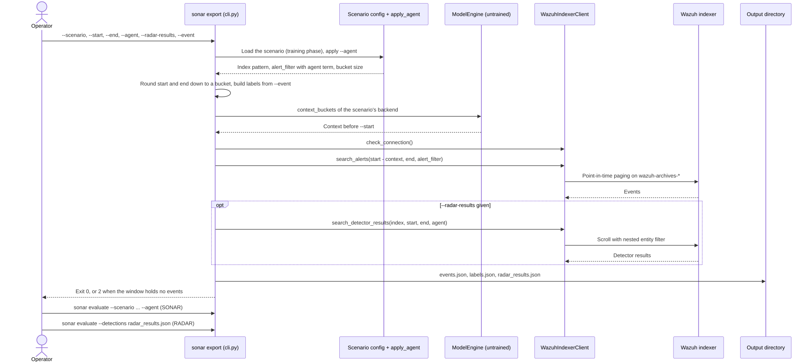
Components
| Component | Implementation | Role |
|---|---|---|
| Comparison scenario | sonar/scenarios/radar_linux_resource_utilization.yaml |
RADAR's index (wazuh-archives-*), filter (events with data.mem_usage_pct, without radar_seed: true documents), one-minute interval, zero fill and the mean and maximum of data.cpu_usage_pct and data.mem_usage_pct, as in radar/config.yaml |
| String metrics | sonar/features.py |
RADAR's decoder stores the metrics as strings; the feature builder parses them as numbers |
| Per-host restriction | sonar/cli.py (apply_agent) |
Adds an agent.name term to alert_filter and suffixes the model name and an explicit scenario ID with the agent; applied the same way by train, detect, scenario, evaluate and export, after the scenario and any --model-name |
| Export | sonar/cli.py (cmd_export, _export_labels) |
Writes the window's events with their context, the label file and RADAR's results |
| Indexer reads | sonar/wazuh_client.py (search_alerts, search_detector_results) |
Events through a point-in-time (SRS-086); RADAR's results through a scroll |
| Evaluation | sonar/evaluation.py (load_external_detections, score) |
Reads RADAR's results as detections and scores both detectors with the same function |
| Debug data | sonar/test_data/radar_format.py, sonar/test_data/radar_resource_utilization/ |
The synthetic resource data rewritten as RADAR events, for debug runs and calibration |
Behaviour
- Window.
--startand--end(ISO 8601, UTC without an offset) are rounded down to a bucket; the window must span at least one bucket. Each--event TYPE,START,ENDmust overlap the window; a malformed or outside event fails before the indexer is contacted. - Context. Events are exported from the context before
--start, so that SONAR gives a verdict for every bucket of the window. The context is the number of buckets the scenario's backend needs before its first verdict, taken from an untrained engine with the scenario's settings (119 one-minute buckets for MVAD withsliding_window: 120), or--context-minutes. - Events. Whole documents are exported, not only the fields the features read, through the scenario's index,
alert_filterand agent term. - RADAR's results. With
--radar-results <index pattern>, the plugin's results whose interval starts in the window are read through a scroll: results of several hosts share a start time and the result index has no keyword tiebreaker for point-in-time paging. With--agent, a nested query on the plugin'sentitylist (nameagent.name,valuethe agent) keeps that host's results. At mostwazuh.max_alertsresults are kept. - Files.
events.json(a JSON array),labels.json(sonar-labels/1, span = the window) and, with--radar-results,radar_results.json. Exit status 0 on success, 2 when the window holds no events (wrong index, filter or agent), 1 on error. - Scoring.
sonar evaluate --scenario radar_linux_resource_utilization --agent <host>trains on an exported training window and scores the test window;sonar evaluate --detections radar_results.jsonscores RADAR's results on the same labels. RADAR's result counts as an anomaly when itsanomaly_gradeis above 0.
Design constraints
- Same inputs, different detectors. The scenario's features, interval and empty-bucket handling copy RADAR's; changing one side without the other makes the comparison measure the inputs rather than the detectors.
- No seeded history. RADAR seeds a flat synthetic history into
wazuh-archives-radar-seed, which matches the scenario's index pattern; SONAR excludes it so it never learns a host that did not exist. - One model per host. A host's model stores its agent filter, so detection with that model reads only that host; each host has its own scenario ID, and therefore its own watermarks, data stream and anomaly identifiers.
See: docs/manual/sonar_docs/radar-comparison-guide.md
Parent links: SRS-081 SONAR scores RADAR's resource-utilization data for comparison
Child links: SWD-045 SONAR evaluation metrics, label and report formats
2.0 RADAR Low-Level Architecture
Low-level architecture requirements for RADAR (Real-time Alert Detection and Automated Response) subsystem.
2.1 RADAR scenario setup flow LARC-015
Setting up a RADAR scenario takes the following steps, in this order. Each one can be run from the command line or from the GUI's Deployment page.
- Deploy the scenario on the manager (
build-radar.sh <scenario>, GUI Scenario Management). Bring up the core stack if no manager is running, build and enroll the webhook, harden enrollment, then place the manager-side files (risk engineradar_ar.py,ar.yaml, enrichment integrations, Filebeat pipeline changes) and deploy, through the Wazuh API, the scenario's agent-group configuration, decoders, rules, CDB lists andossec.confblocks, including the active-response commands. - Onboard endpoints (
radar.sh mint-tokenor GUI Agent Management, thenradar-agent/bootstrap-agent.shon the endpoint). Install and enroll the Wazuh agent intodefault, the scenario's group and, for shared scenarios,radar_shared. Install the active-response scripts listed inradar-agent/ar-scripts.yamland the scenario's metric collector, if it has one. Already-enrolled agents are assigned to the scenario's groups from the manager instead (GUI Group Management). - Create the anomaly detection pipeline, only for scenarios that use the OpenSearch AD plugin (
run-radar.sh <scenario> [--ingest true], GUI Anomaly Detector). Optionally seed the indices with synthetic history, then create and start the detector and create the monitor that posts to the webhook. Forsuspicious_login,off_hours.pydeploys the off-hours pipeline, backfills it and creates the rule-mode monitor or the model-mode detector and monitor instead.
The thresholds that trigger the monitors come from radar/config.yaml, and the risk tiers and mitigations that decide the response come from radar/scenarios/active_responses/ar.yaml.
Parent links: SRS-054 RADAR automated test framework, SRS-067 Secure agent enrollment and automated onboarding, SRS-069 Scenario-scoped agent group configuration delivery
Child links: SWD-018 RADAR baseline history ingestion, SWD-019 RADAR test environment setup
2.2 RADAR active response flow LARC-016
Every RADAR scenario ends in the same active response, radar_ar.py (radar/scenarios/active_responses/radar_ar.py), which the Wazuh manager runs on the manager itself (<location>server</location>) for each alert whose rule is bound to it in the scenario's ossec.conf snippet (radar/scenarios/ossec/).
- Alert. A signature rule fires on a decoded event, or an anomaly trigger rule fires on the log line the webhook wrote for an OpenSearch monitor notification (
/var/log/ad_alerts.login the webhook container, forwarded by that container's Wazuh agent). - Scenario and trust.
radar_ar.pymaps the alert to a scenario inar.yamlby rule ID, then by rule group. An anomaly alert that does not come from the webhook agent's log is dropped without scoring. - Context and CTI. It collects the scenario's context events from the indexer for a window that ends at the alert's timestamp (
delta_signature_minutesordelta_ad_minutes), extracts IOCs, and, when DECIPHER is reachable, asks DECIPHER's analyze endpoint for a CTI score (SWD-038). - Risk and tier. It computes the risk score from the anomaly, signature and CTI terms, fused with a counterpart alert where the scenario enables fusion, and maps it to tier 0 to 3 (HARC-012, SRS-061).
- Actions. From tier 1: a Flowintel case through DECIPHER's incident endpoint (when reachable) and an email notification. At tiers 2 and 3, and only when the scenario's
allow_mitigationis true: the tier's mitigations (firewall-drop,lock_user_linux.sh,terminate_service.sh), sent through the Wazuh API to the affected endpoint's agent (for a per-agent anomaly, the agent the anomaly names), after allowlist and target checks. - Record. Every step and decision, including withheld mitigations, is written to
/var/ossec/logs/active-responses.log.
The detailed decision pipeline is specified in LARC-026 and SWD-027.
The diagram below summarises this flow.
Parent links: SRS-026 TIP Data Export, SRS-051 RADAR scenario: suspicious login, SRS-055 RADAR scenario: Geo-IP AC via whitelisting, SRS-056 RADAR scenario: log size change, SRS-061 RADAR: Tiered active response logic, SRS-062 RADAR scenario: off-hours activity detection, SRS-066 RADAR scenario: web scanning detection, SRS-071 RADAR scenario: Linux resource utilization detection
Child links: SWD-034 RADAR custom rule and decoder patterns
2.3 RADAR integration with OpenSearch modules LARC-017
RADAR uses two OpenSearch plugins shipped with the Wazuh indexer: Anomaly Detection, which runs a random cut forest (RCF) detector per scenario, and Alerting, which runs the monitor that reports anomalies to RADAR.
- Configuration.
run-radar.shrunsdetector.pyandmonitor.py(or, forsuspicious_login,off_hours.py) in the throwawayradar-clicontainer. They create the detector from the scenario's features,categorical_field,shingle_size,detector_intervalanddelay_minutesinradar/config.yaml, and a monitor with the scenario'sanomaly_grade_thresholdandconfidence_threshold. - Input indices.
log_volumereadswazuh-ad-log-volume-*, filled through the patched Filebeat archives pipeline.linux_resource_utilizationreadswazuh-archives-*. The off-hours model mode ofsuspicious_loginreadswazuh-archives-*events flagged by theradar-off-hoursingest pipeline. - Output path. When the monitor's trigger condition holds, it POSTs to the
ad-webhookcontainer at/notifyon port 8080. The webhook writes onead_alertline per anomalous entity to a log file read by its own Wazuh agent. The manager decodes the line with theopensearch_addecoder, matches the scenario's AD rules, and runsradar_ar.py.
See: docs/manual/radar_docs/radar-run-ad.md.
Parent links: SRS-056 RADAR scenario: log size change, SRS-062 RADAR scenario: off-hours activity detection, SRS-071 RADAR scenario: Linux resource utilization detection
Child links: SWD-028 RADAR detector module design, SWD-029 RADAR monitor and webhook module design
2.4 RADAR logical flow LARC-018
RADAR has two detection paths, which converge on the same active-response pipeline (LARC-026).
Overall pipeline
Wazuh agent (raw logs, RADAR metrics) -> Wazuh manager (decode -> rules)
|
[Enrichment, suspicious_login and geoip_detection only]
stock rule alert -> enrichment integration -> enriched log line -> Wazuh manager (decode again -> RADAR rules)
|
[Signature path] Wazuh manager (RADAR rules) -> Active response
|
[Anomaly path] Wazuh indexer (archives) -> Detector or query monitor -> Monitor -> Webhook -> Webhook container's agent -> Wazuh manager (rules) -> Active response
Both paths terminate in the same place: a Wazuh rule firing an active-response command bound to radar_ar.py (SWD-027). The anomaly path exists to get an anomaly result into that same rule-firing mechanism; it does not bypass it.
Signature-based detection flow
- Collection: the Wazuh agent forwards a raw log line to the manager, unmodified.
- Decoding and first rule match: decoders parse the line into structured fields and rules evaluate them.
- Enrichment (only
suspicious_loginandgeoip_detection): an alert in an authentication or web-access group triggers a manager-side integration, which writes the original line plus aRADARtail (GeoIP, ASN, velocity) to a file the manager monitors. The manager decodes that enriched line a second time, and the scenario's rules match on theradar_*fields (SWD-030). - Rule matching: a RADAR rule matches and generates an alert at its configured level.
- Active response: the alert's active-response binding invokes
radar_ar.py, which scores the alert and dispatches the tier-appropriate response (SWD-027, SRS-061). The outcome is written to/var/ossec/logs/active-responses.log.
Anomaly-based detection flow
- Collection: the agent forwards raw logs and, for
log_volumeandlinux_resource_utilization, the metric lines written by RADAR's collectors on the endpoint. - Indexing: the manager archives every event, and the Filebeat archives pipeline indexes it into
wazuh-archives-*, exceptlog_volumemetrics, which it routes towazuh-ad-log-volume-*. Forsuspicious_login, the pipeline also calls theradar-off-hoursingest pipeline, which flags events of listed users that fall outside their declared working hours. - Detection: on its configured interval, an RCF anomaly detector queries the index, extracts feature values per entity (agent, or user for the off-hours model mode), and stores an anomaly grade and confidence per entity and interval. The off-hours rule mode of
suspicious_loginuses no detector: a query monitor counts flagged events directly. - Monitoring: on its own interval, a monitor selects results above the scenario's
anomaly_grade_thresholdandconfidence_threshold(up tomonitor_max_entities) and sends an HTTP POST, authenticated with a shared secret, to the webhook. - Webhook: the webhook service validates the notification and writes one log line per anomalous entity to
/var/log/ad_alerts.login its container; the Wazuh agent installed in that container forwards the lines to the manager. - Re-entry into the rule engine: the manager decodes and evaluates the line like any other event. A scenario's trigger rule matches, and
radar_ar.pyscores and responds, accepting the anomaly alert only because it comes from the webhook agent's log.
Related: HARC-004.
Parent links: SRS-014 Event Decoding & Transformation, SRS-015 Custom Rule Support, SRS-055 RADAR scenario: Geo-IP AC via whitelisting, SRS-056 RADAR scenario: log size change, SRS-062 RADAR scenario: off-hours activity detection, SRS-066 RADAR scenario: web scanning detection, SRS-068 Manager-side enrichment, SRS-071 RADAR scenario: Linux resource utilization detection
Child links: SWD-034 RADAR custom rule and decoder patterns
2.5 RADAR risk engine calculation flow LARC-021
This item describes the risk calculation flow of the RADAR active response (radar/scenarios/active_responses/radar_ar.py, class RiskEngine, with FusionCorrelator). The flow combines anomaly, signature and threat-intelligence evidence into one normalised risk score that selects the response tier.
Mathematical foundation
The risk calculation follows the formula, clamped to [0, 1]:
$$R = w_A \cdot A + w_S \cdot S + w_T \cdot T$$
Where:
- A (anomaly intensity) = $G \cdot C$, the anomaly grade and confidence carried by the alert (
data.anomaly_grade,data.anomaly_confidence). Only alerts matched by a scenario'sad.rule_idscarry them: today the OpenSearch AD alerts relayed by the RADAR webhook. - S (signature risk) = $L \cdot I$, with $I$ the scenario's
signature_impactand $L$ thesignature_likelihoodof the alert's rule (a per-rule or per-group list, or one scalar). An alert matched only as an anomaly alert has $S = 0$. - T (CTI score) =
cti_score_T, the normalised score returned by the DECIPHER analyze endpoint (SWD-038), clamped to [0, 1]. Scenarios without a DECIPHER analyze endpoint always have $T = 0$. RADAR does not aggregate CTI indicators locally. - Fusion (opt-in per scenario, SRS-061 requirement 7): the term an alert cannot carry itself is raised to the strongest time-discounted score of an alert of the other kind for the same entity. It never lowers a term.
The weights are set per scenario in ar.yaml; a weight left unset is 0. Shipped values:
| Scenario | $w_A$ | $w_S$ | $w_T$ |
|---|---|---|---|
default, scanning_detection |
0.0 | 0.7 | 0.3 |
geoip_detection |
0.0 | 1.0 | 0.0 |
suspicious_login |
0.3 | 0.4 | 0.3 |
log_volume, linux_resource_utilization |
0.9 | 0.0 | 0.1 |
Tier determination
Risk scores map to four response tiers via the scenario's tier1_min/tier1_max/tier2_max boundaries in ar.yaml (built-in defaults 0.0/0.33/0.66); see SRS-061 for the normative response semantics of each tier:
- Tier 0 (R < tier1_min): logged only, no notification
- Tier 1 (tier1_min ≤ R < tier1_max): email notification + Flowintel case creation
- Tier 2 (tier1_max ≤ R < tier2_max): Tier 1 actions +
mitigations_tier2(ifallow_mitigation) - Tier 3 (R ≥ tier2_max): Tier 1 actions +
mitigations_tier3(ifallow_mitigation)
Flow sequence
- Input collection: the alert's AD grade and confidence (anomaly alerts), the rule's likelihood and the scenario's impact (signature alerts), and the CTI score returned by DECIPHER.
- Component calculation: compute A, S, T.
- Fusion: if the scenario enables it, raise A or S with the strongest discounted counterpart alert.
- Weighted combination: apply the scenario's weights and clamp R to [0, 1].
- Tier assignment: map R to Tier 0–3 with the scenario's boundaries.
- Action selection: plan the tier's actions, gated by
allow_mitigation(LARC-026).
See also: radar/scenarios/active_responses/ar.yaml for the per-scenario values, SWD-026 for the normative design and algorithm, and docs/manual/radar_docs/radar-tuning.md for reachable tiers per scenario.
Related: HARC-012.
Parent links: SRS-051 RADAR scenario: suspicious login, SRS-055 RADAR scenario: Geo-IP AC via whitelisting, SRS-056 RADAR scenario: log size change, SRS-061 RADAR: Tiered active response logic
Child links: SWD-026 RADAR risk engine implementation design
2.6 RADAR detector creation workflow LARC-022
The diagram below depicts the sequence of operations for creating and starting an OpenSearch anomaly detector with radar/anomaly_detector/detector.py. run-radar.sh runs it, inside the radar-cli container, for the scenarios with a generic detector: log_volume and linux_resource_utilization. The suspicious_login model-mode detector is managed by radar/anomaly_detector/off_hours.py instead (SRS-062).
Workflow stages
1. Configuration loading
- Read the scenario block from
config.yaml(scenarios.<name>). - Load
.env(OS_URL,OS_USER,OS_PASS,OS_VERIFY_SSL,OS_TIMEOUT);OS_URLis required.
2. Detector existence check
POST /_plugins/_anomaly_detection/detectors/_searchfor the exact name<SCENARIO>_DETECTOR(scenario name in upper case, e.g.LOG_VOLUME_DETECTOR).- A 404 (AD system index not created yet) means no detector exists.
3. Detector specification building (only if none exists)
The specification is built from the scenario block:
- indices:
log_index_pattern, else<index_prefix>-*(e.g.wazuh-ad-log-volume-*,wazuh-archives-*) - time_field:
time_field(@timestamp) - feature_attributes: the
featuresaggregations (e.g. max ofdata.log_bytes) - filter_query:
filter_query, else match all - detection_interval / window_delay:
detector_interval,delay_minutes(minutes) - category_field:
categorical_field(agent.name, one baseline per agent) - shingle_size, imputation_option (default zero fill), detector rules (e.g. ignore small deviations)
- result_index: custom result index, with its minimum age, size and TTL
4. Detector creation
- Wait briefly until the index pattern holds documents: the AD plugin cannot start a detector on an empty index.
POST /_plugins/_anomaly_detection/detectors; the response carries the detector ID.
5. Detector activation
POST /_plugins/_anomaly_detection/detectors/{detector_id}/_start, for a new or an existing detector.
6. Output
- Print the detector ID on stdout;
run-radar.shpasses it tomonitor.py(LARC-023).
Detector creation sequence
![UML Diagram]( "UML")
Implementation reference
See radar/anomaly_detector/detector.py and radar/run-radar.sh. Operator guide: docs/manual/radar_docs/radar-run-ad.md.
Parent links: SRS-056 RADAR scenario: log size change, SRS-071 RADAR scenario: Linux resource utilization detection
Child links: SWD-028 RADAR detector module design
2.7 RADAR monitor and webhook workflow LARC-023
The diagram below depicts how radar/anomaly_detector/monitor.py and radar/anomaly_detector/webhook.py create the OpenSearch notification channel and alerting monitor for an anomaly detector, and how the monitor's notifications then reach Wazuh through the RADAR webhook service (radar/webhook/ad_alerts_webhook.py). run-radar.sh runs monitor.py after detector.py (LARC-022) for log_volume and linux_resource_utilization; the suspicious_login off-hours monitors are created by off_hours.py through the same channel and webhook.
Workflow stages
1. Notification channel (idempotent)
ensure_webhook() in webhook.py:
GET /_plugins/_notifications/configsand look for awebhookchannel with the configured name (webhook.nameinconfig.yaml, elseWEBHOOK_NAME, default "RADAR Webhook") and URL (webhook.url, elseWEBHOOK_URL).- If found, update it when its shared-secret header differs; otherwise
POST /_plugins/_notifications/configsto create it. - The channel sends the header
X-RADAR-Webhook-TokenwithWEBHOOK_SHARED_SECRET.
2. Monitor specification
monitor_payload() builds a query-level monitor named monitor_name:
- Schedule: every
monitor_interval, elsedetector_interval, minutes. - Input: search of the detector's
result_indexfor results of this detector in the last interval with anomaly grade and confidence at or aboveanomaly_grade_thresholdandconfidence_threshold, highest grade first, at mostmonitor_max_entities(default 5) hits. - Trigger
trigger_name: a Painless condition on the maximum grade and the top hit's confidence. - Action: POST to the channel with the message template of SWD-029: the top hit's keys plus an
anomalieslist with one entry per hit, each with entity, grade, confidence and the anomaly's own data window. - A SHA-256 fingerprint of the payload is stored in the monitor's
ui_metadata.
3. Monitor creation or update
POST /_plugins/_alerting/monitors/_searchby monitor name.- If it exists and its detector ID or payload fingerprint differs,
PUTthe new payload; if it matches, leave it. OtherwisePOST /_plugins/_alerting/monitors. - Print the monitor ID.
4. Runtime delivery
- Each run with a hit posts to the webhook (
POST /notify, portWEBHOOK_INTERNAL_PORT, default 8080). - The webhook checks the token, validates each entry, and writes one line per entity to
/var/log/ad_alerts.log(format in SWD-035). - The Wazuh agent in the webhook container ships the file to the manager, where the
opensearch_addecoder, an AD catch-all rule (radar_ad_receivedgroup) and the scenario's trigger rule invokeradar_ar.py.
Monitor and webhook sequence
![UML Diagram]( "UML")
Implementation reference
- radar/anomaly_detector/monitor.py - monitor creation and update
- radar/anomaly_detector/webhook.py - notification channel management
- radar/webhook/ad_alerts_webhook.py - webhook service
Related: HARC-004, HARC-012, LARC-022.
Parent links: SRS-056 RADAR scenario: log size change, SRS-062 RADAR scenario: off-hours activity detection, SRS-071 RADAR scenario: Linux resource utilization detection, SRS-089 RADAR anomaly alert relay contract
Child links: SWD-029 RADAR monitor and webhook module design, SWD-035 RADAR webhook service design
2.8 RADAR deployment pipeline flow LARC-024
This item describes the flow radar/build-radar.sh runs to deploy a scenario, or with --core-only to bring up a plain Wazuh stack. The GUI's Deploy action (radar/gui/orchestrator/deploy.py, stream_build) runs the same stages with the same scripts and wazuh_api calls, streaming their output to the browser. Two differences: it does not revoke an expired enrollment token when the manager is already running, and on success it records the scenario as deployed (active: true) in ar.yaml, which the GUI uses to show deployment status. It replaced the Ansible deployment pipeline, which was removed in v2.0.0. The component design is in SWD-042.
![UML Diagram]( "UML")
Pipeline stages
- Validation. The scenario must be listed in
radar/config.yaml, andradar/.envmust exist.WAZUH_API_URL,WAZUH_AUTH_USERandWAZUH_AUTH_PASSmust be set before any API stage runs. - Core stack. Skipped when the registered manager container is already running; an expired enrollment token is then revoked. Otherwise certificates and per-deployment credentials are created if missing, every host-side path of the
volumes.ymloverlay is created, the Filebeat archivespipeline.jsonis seeded (the build aborts ifvolumes.ymldoes not map it), and the core compose project is started. - Component registration. The running components are recorded in
radar/infra.yaml, which later stages use to resolve addresses. - Webhook (scenario builds only). A shared secret is ensured. If the webhook has no agent key yet, a 60-minute token for group
defaultis minted so the container can enroll on first start. - Enrollment hardening. After the Wazuh API is reachable,
authdrequires a password, auto-purge is disabled, the cluster key is set, and port 1515 is closed (the firewall step needs root). - Manager-side files. Applied to the primary manager node first, then to each additional registered node. A failure on an additional node is reported as a warning and does not stop the build.
- API-side configuration. The scenario's agent-group configuration, then its ruleset (always together with the
defaultruleset) and its marker-delimitedossec.confblocks. The manager is restarted at most once, and only if something changed.
The anomaly detector and monitor are created afterwards, separately, by run-radar.sh (LARC-015, LARC-017).
Idempotency
- Files and
ossec.confblocks are compared with what is deployed and written only when they differ.ossec.confchanges stay inside<!-- RADAR: <name> BEGIN/END -->markers. - Certificates, credentials, the webhook enrollment and the GeoLite2 databases are created only when absent.
- Re-running the pipeline for a deployed scenario converges to the same state.
See: docs/manual/radar_docs/radar-operations.md#deploy-a-scenario.
Parent links: SRS-067 Secure agent enrollment and automated onboarding, SRS-069 Scenario-scoped agent group configuration delivery, SRS-070 RADAR GUI deployment interface
Child links: SWD-019 RADAR test environment setup, SWD-042 RADAR deployment control plane, SWD-032 RADAR configuration management design, SWD-047 RADAR Wazuh API layer and CLI, SWD-050 RADAR infrastructure registry, address resolution and credentials
2.9 RADAR manager-side enrichment pipeline LARC-025
This item describes the log enrichment pipeline that runs on the Wazuh manager for the suspicious_login and geoip_detection scenarios (HARC-014). It replaced the per-endpoint RADAR helper daemon, removed in v2.0.0.
Pipeline overview
Endpoints forward their raw authentication and web-access logs. The manager classifies each line with Wazuh's stock decoders and rules; an alert in a relevant group triggers an enrichment integration, which appends geographic and behavioural context to the original line and writes it to a file the manager monitors. The enriched line is decoded a second time, and the scenario rules match on the added radar_* fields.
| Path | Trigger (rule groups) | Integration | Output file |
|---|---|---|---|
| Authentication | authentication_success, authentication_failed |
custom-radar-enrich |
/var/ossec/logs/radar/enriched_auth.log |
Web access (geoip_detection only) |
accesslog |
custom-radar-web-enrich |
/var/ossec/logs/radar/enriched_web_access.log |
Both integrations and their <localfile> entries are declared in the manager snippets radar/scenarios/ossec/radar-shared-auth-log-ossec-snippet.xml and radar/scenarios/ossec/radar-geoip-detection-ossec-snippet.xml, and installed by radar/radar_deploy/manager-apply-scenario.sh.
Pipeline stages (authentication path)
1. Trigger and loop guard
integratord passes the alert to custom-radar-enrich. If the alert's full_log already carries a RADAR tail, the line is an enriched line on its second pass, and the integration exits without output.
2. Parsing
The integration parses the event timestamp, user, source IP and outcome (success or failure) from the original sshd log line itself, not from Wazuh's decoded fields, which the scenario decoders fill only once a tail exists. Accepted and failed logins, including invalid users, are recognised; any other line produces no output. The timestamp is the log line's own (syslog or ISO 8601), so velocity is computed on event time, not processing time.
3. Geographic lookup
geoip.py looks up the source address in the MaxMind GeoLite2 City and ASN databases (/var/ossec/etc/radar/): ISO country code, first subdivision, city, latitude, longitude and ASN. A missing ASN sets asn_placeholder_flag to true.
4. User state
state_store.py loads the user's state from the SQLite database /var/ossec/etc/radar/user_state.sqlite3, keyed by user name and shared by all endpoints: last event time, last position, last country, and the ASN history of the last 90 days.
5. Behavioural indicators
- Geo-velocity: great-circle (haversine) distance between the previous and current positions divided by the time between the two events: $v = d_{km} / \max(|\Delta t_h|, 10^{-9})$. It is 0 for the user's first located event. Velocity is not capped.
- Country change: 1 when the user's previous known country differs from the current one, else 0.
- ASN novelty: 1 when the ASN is not in the user's ASN history, else 0. History entries older than 90 days (relative to the event time) are dropped before the check.
The updated state is written back before the tail is emitted.
6. Enriched line
The original line is appended with a tail and written to enriched_auth.log, for example:
Nov 23 10:15:02 web01 sshd[4242]: Accepted password for alice from 203.0.113.42 port 52111 ssh2 RADAR outcome='success' asn='64500' asn_placeholder_flag='false' country='US' region='California' city='San Francisco' geo_velocity_kmh='450.230' country_change_i='1' asn_novelty_i='0'
7. Second pass
The manager reads the file as syslog. The -with-radar decoders in radar/scenarios/decoders/suspicious_login/0310-ssh.xml (shipped identically for geoip_detection) extract the radar_* fields, and the rules evaluate them: for example impossible travel (velocity of at least 900 km/h with a country change) in suspicious_login, and a country outside the whitelist_countries CDB list in geoip_detection.
Web-access path
custom-radar-web-enrich handles access-log lines (Apache or Nginx, plain or relayed through rsyslog). It extracts the client address, skips loopback and RFC 1918 addresses, and appends RADAR country="…" region="…" city="…" lat="…" lon="…". It keeps no state and computes no velocity or novelty. The geoip_detection web decoders in 0375-web-accesslog.xml read the tail.
Failure handling
Any failure to read the alert, open a GeoIP database, update the state or write the output is appended to /var/ossec/logs/radar/enrichment_errors.log; the integration then exits without output. The first-pass alert is unaffected, so a broken enrichment never hides the original event. radar/radar_deploy/manager-health.sh reports missing integration files, databases, an unwritable state database and recent error-log entries (SRS-068).
Implementation reference
radar/manager-enrichment/ (custom-radar-enrich, custom-radar-web-enrich, enrichment.py, web_enrichment.py, geoip.py, state_store.py); design in SWD-030.
See also
docs/manual/radar_docs/radar-scenarios/suspicious_login_explained.mddocs/manual/radar_docs/radar-scenarios/geoip_detection_explained.md
Related: HARC-014.
Parent links: SRS-068 Manager-side enrichment
Child links: SWD-030 RADAR manager-side enrichment module design
2.10 RADAR active response decision pipeline LARC-026
The diagram below depicts the decision pipeline implemented in radar/scenarios/active_responses/radar_ar.py, the Wazuh active response that every RADAR scenario invokes on the manager. It expands on LARC-016 (RADAR active response flow); SWD-027 is the normative design.
Pipeline stages
1. Alert intake
- Wazuh runs the script once per matching alert (
<active-response>withlocationserver) and writes{"parameters": {"alert": {...}}}on stdin. - Settings come from
active_responses.envnext to the script; the scenario configuration fromar.yaml(AR_RISK_CONFIG). - An empty or unparseable input ends the run (exit 1).
2. Scenario identification
ScenarioIdentifier (SRS-061 requirement 3):
- An exact
rule.idmatch in a scenario'sad.rule_idsorsignature.rule_idswins; otherwiserule.groupsare matched against the scenario'srule_groups. In both cases the first scenario listed inar.yamlwins. - Detection type:
ad,signature, orhybrid(rule ID in both lists). - No match: logged, exit 0.
3. Anomaly alert origin
An ad or hybrid alert is processed only if the webhook agent (WEBHOOK_AGENT_NAME, default ad-webhook) read it from /var/log/ad_alerts.log; any other is logged and dropped (exit 0).
4. Context collection
The scenario's strategy class (Registry: BaseScenario, GeoipDetection, SuspiciousLogin, LogVolume, LinuxResourceUtilization, ScanningDetection):
- Time window:
delta_signature_minutes(default 1) before the alert for signature alerts,delta_ad_minutes(default 10) for anomaly alerts;LogVolumeandLinuxResourceUtilizationuse the alert's monitor period, capped atdelta_ad_minutes. - Effective agent: the alert's agent for signature alerts; the anomalous agent (
entity_keyword) forLogVolume/LinuxResourceUtilization; forsuspicious_loginanomaly alerts, the named user's events on any agent, and the agent that appears most in them. - Query: the indices in
OS_INDEXES(defaultwazuh-alerts-*,wazuh-archives-*), up to 1000 events, retried while empty (AR_CONTEXT_QUERY_ATTEMPTS). - IOCs from the alert and the context: IPs, users, services, domains, hashes,
radar_country,radar_asn, agent.
The context feeds the email, DECIPHER and the case, never the risk score.
5. CTI enrichment (DECIPHER)
- Health check once per run; a failure is a WARNING and DECIPHER is skipped.
- If healthy and the scenario has an analyze endpoint (
suspicious_login,scanning_detection), post the scenario's payload; the returnedseverityis $T$. Otherwise $T = 0$.
6. Scoring
- Anomaly grade and confidence from the alert (
ad,hybrid). - Fusion lookup (
FusionCorrelator) for scenarios that enable it; a failure is logged and the alert is scored alone. - Risk score and tier (LARC-021, SWD-026).
7. Decision
- Decision ID: SHA-256 of the alert ID, timestamp, rule, agent, scenario, detection, window and effective agent (SRS-061 requirement 6). It correlates log lines and the case; there is no deduplication cache.
- Target IP: the alert's own source IP (
ScanningDetection:src_ip, or theX-Forwarded-Forclient when the peer is a trusted proxy). - Tier ≥ 1 and DECIPHER healthy: create the Flowintel case through the DECIPHER incident endpoint (priority by tier).
8. Action planning
ActionPlanner: email from Tier 1; mitigations_tier2 at Tier 2 and mitigations_tier3 at Tier 3 only if allow_mitigation is true. Otherwise the would-be mitigations are logged with a withheld_reason (mitigation_disabled, tier_out_of_mitigation_range).
9. Action execution
ActionExecutor, for each planned mitigation:
- Gates: scenario allowlist (
allowlist_file, checked once per decision, fail-closed when unreadable);global.never_blockplus loopback, link-local and the manager's own addresses; supported identifiers only. - Agent: Wazuh agent ID of the effective agent (
GET /agents?search=), else the alert's own agent ID. - Arguments:
firewall-dropthe target IP;lock_user_linux.shthe Linux users named in the alert, neverrootorprotected_users;terminate_service.sha context service listed interminable_services, else the alert's remote IPv4. - Dispatch:
PUT /active-response?agents_list=<id>with command!<name>; the agent-side script runs on the endpoint.
Then the email is sent (if SMTP is configured).
10. Logging
Every stage writes a line <time> [LEVEL] <message> {json} to /var/ossec/logs/active-responses.log (AR_LOG_FILE): scenario, context, CTI, risk components, planned and withheld actions, case, dispatch results. Scenarios with an allowlist_file also get one JSON audit entry per action outcome, in the native active-response format that Wazuh decodes with rule 650.
11. Exit
0: processed, including no scenario match and an untrusted anomaly alert1: no alert could be read2: unhandled exception (logged as CRITICAL with traceback)
Error handling
- OpenSearch, DECIPHER, fusion, Wazuh API and SMTP failures are logged and the remaining stages continue.
- An empty context query is retried a fixed number of times with a fixed delay; there is no other retry.
- An anomaly alert without a numeric grade and confidence raises an error (exit 2).
Configuration schema (ar.yaml)
Abbreviated from radar/scenarios/active_responses/ar.yaml:
scenarios:
geoip_detection:
signature:
rule_ids: ["100900", "100901", "100902", "100903"]
w_ad: 0.0
w_sig: 1.0
w_cti: 0.0
signature_impact: 0.6
signature_likelihood:
- rule_id: [100900, 100901, 100903]
weight: 0.9
tiers: {tier1_min: 0.0, tier1_max: 0.33, tier2_max: 0.66}
mitigations_tier2: [firewall-drop]
mitigations_tier3: [firewall-drop]
allow_mitigation: true
Active response sequence
![UML Diagram]( "UML")
Implementation reference
See radar/scenarios/active_responses/radar_ar.py and radar/scenarios/active_responses/ar.yaml.
See also
- SWD-027 for the normative software design specification of this pipeline
- LARC-016 for simplified flow diagram
- docs/manual/radar_docs/radar-tuning.md for weights, tiers and mitigations
Related: HARC-004, HARC-012, HARC-013, LARC-021.
Parent links: SRS-051 RADAR scenario: suspicious login, SRS-055 RADAR scenario: Geo-IP AC via whitelisting, SRS-056 RADAR scenario: log size change, SRS-061 RADAR: Tiered active response logic, SRS-066 RADAR scenario: web scanning detection, SRS-071 RADAR scenario: Linux resource utilization detection, SRS-088 RADAR default baseline rules
Child links: SWD-026 RADAR risk engine implementation design, SWD-027 RADAR active response script design, SWD-037 RADAR-SONAR integration design, SWD-038 RADAR-DECIPHER CTI and Flowintel integration design
2.11 RADAR data ingestion pipeline LARC-027
This item describes how run-radar.sh seeds the indexer with history for the anomaly-based scenarios, through the scenario-specific wazuh_ingest.py scripts (SWD-033).
Pipeline purpose
An OpenSearch RCF detector needs enough past intervals per entity before it reports anomalies, and the suspicious_login off-hours model mode needs weeks of per-user activity. Ingestion writes that history so a scenario can be demonstrated and tested right after deployment, without waiting for real data to accumulate. It is optional (run-radar.sh <scenario> --ingest true) and exists for three scenarios:
| Scenario | Target index | What is written | Shaped from |
|---|---|---|---|
log_volume |
wazuh-ad-log-volume-<date> (today) |
Synthetic log_volume_metric samples (data.log_bytes) for one agent, growing linearly up to the latest real value |
The agent's two most recent real samples |
linux_resource_utilization |
wazuh-archives-radar-seed |
Synthetic resource_usage_metric samples (data.cpu_usage_pct, data.mem_usage_pct) per agent, marked radar_seed: true, ending where the agent's real samples begin |
Agents with real samples in the configured recent window |
suspicious_login |
wazuh-archives-4.x-<date> (one index per day) |
Synthetic archived activity events (data.user, data.action) per configured user, inside each user's shift, with optional evening work and one burst |
The ingest.users list in config.yaml |
All parameters come from scenarios.<scenario>.ingest in radar/config.yaml; the indexer connection from OS_URL, OS_USER, OS_PASS and OS_VERIFY_SSL.
Workflow stages
1. Invocation
run-radar.sh builds the radar-cli image, which contains the three ingest scripts, and runs python <scenario>/wazuh_ingest.py in it, passing the indexer settings as environment variables and mounting the indexer CA certificate. Ingestion runs before the detector is created; detector.py additionally waits briefly (about ten seconds at most) for the index pattern to have documents, because the AD plugin cannot start a detector on an empty index.
For suspicious_login, off_hours.py deploy first creates the radar-off-hours ingest pipeline, the synthetic events are indexed through it so they carry the off-hours flags, and off_hours.py backfill then flags real archived events indexed earlier.
2. Baseline
log_volume: the two most recentdata.log_bytesvalues of the configured agent give the latest value and the growth per step. With no real sample the script waits 60 seconds and asks again, then falls back tobaseline_bytesandfallback_deltaand warns that the scenario is probably not wired up. With one sample, it usesfallback_delta; a non-positive delta is replaced byfallback_delta.linux_resource_utilization: targets are the configuredagent_names, or every agent with real (non-seed) samples inbaseline_window. Each target's earliest real sample marks where the seed must end; an agent that already hashistory_minutesof history is skipped. With no target at all, the script exits with an error.suspicious_login: no query; the history comes entirely from configuration.
3. Generation
log_volume:history_minutes × 60 / step_secondspoints, one everystep_seconds, rising linearly by the delta per step and ending at the latest real value, plus one point one step after now.linux_resource_utilization: one point everystep_secondsfromnow − history_minutesto the agent's first real sample, CPU and memory drawn aroundbaseline_cpu_pctandbaseline_mem_pctwith the configured jitter (reproducible per agent).suspicious_login: for each workday fromhistory_daysback tofuture_daysahead, betweenevents_per_login_minandevents_per_login_maxevents at random times within the user's shift (±drift_minutes), in the user's time zone; optionally evening events and a burstdays_agodays back.
4. Bulk indexing
Documents are sent to the OpenSearch Bulk API (POST /_bulk, NDJSON): in one request for log_volume, in chunks for the other two (suspicious_login names the radar-off-hours pipeline when off-hours detection is enabled). linux_resource_utilization first creates its seed index with an explicit mapping if it does not exist.
5. Result
An HTTP error or a failed bulk item makes log_volume and linux_resource_utilization exit with an error; suspicious_login raises on HTTP errors and prints failed items. Each script prints what it indexed. linux_resource_utilization then stops its detector, if one exists, so that the detector re-initialises on the seeded history at its next start. There is no separate verification query and no retry.
Data ingestion sequence
![UML Diagram]( "UML")
Implementation reference
radar/scenarios/ingest_scripts/log_volume/wazuh_ingest.pyradar/scenarios/ingest_scripts/linux_resource_utilization/wazuh_ingest.pyradar/scenarios/ingest_scripts/suspicious_login/wazuh_ingest.pyradar/run-radar.sh,radar/Dockerfile.radar-cli
See also
docs/manual/radar_docs/radar-run-ad.md(sections "About data ingestion" and "Stage 1: Data ingestion")
Related: HARC-004, HARC-014, LARC-015.
Parent links: SRS-056 RADAR scenario: log size change, SRS-062 RADAR scenario: off-hours activity detection, SRS-071 RADAR scenario: Linux resource utilization detection
Child links: SWD-033 RADAR data ingestion module design
2.12 RADAR GeoIP detection scenario flow LARC-028
This item describes the end-to-end flow of the geoip_detection scenario, which uses signature rules to detect and block access from non-whitelisted countries (SRS-055).
Scenario overview
GeoIP detection is a signature-based scenario with no anomaly detector. It relies on:
- manager-side GeoIP enrichment by Wazuh integrations (SRS-068; replaces the former endpoint-side RADAR helper),
- RADAR-aware decoders that read the enrichment,
- rules that look the country up in a CDB whitelist,
- the RADAR active response for notification and blocking.
Flow stages
1. Source events on the endpoint
- SSH authentication lines in
/var/log/auth.log, collected through theradar_sharedagent group. - Apache access logs (
/var/log/apache2/access.log,other_vhosts_access.log), collected through thegeoip_detectionagent group.
2. First pass on the manager
- The stock decoders and rules classify the events (
authentication_success/authentication_failed,accesslog). Only an event that produces an alert reaches the integrations; a plain 2xx/3xx web request stays at level 0.
3. Enrichment (SRS-068)
custom-radar-enrich(groupsauthentication_success,authentication_failed) looks the source IP up in GeoLite2 City and ASN, updates the user's travel state, and appends aRADAR ...tail (country, region, city, ASN, geo-velocity, country change, ASN novelty) to the original line in/var/ossec/logs/radar/enriched_auth.log.custom-radar-web-enrich(groupaccesslog) skips private addresses and appendsRADAR country="…" region="…" city="…" lat="…" lon="…"to/var/ossec/logs/radar/enriched_web_access.log.- The manager reads both files back as
localfileinputs.
4. Decoding of the enriched lines
0310-ssh.xml(sshd-success-with-radar,ssh-failed-with-radar,ssh-invfailed-with-radar) and0375-web-accesslog.xml(web-accesslog-*-radar) extractradar_countryand the otherradar_*fields. They replace the stock0310-ssh_decoders.xmland0375-web-accesslog_decoders.xml, which are excluded inossec.conf.
5. Rule evaluation
- 100900:
authentication_successandradar_countrynot inetc/lists/whitelist_countries. - 100901:
authentication_successandsrcgeoipnot Luxembourg, France, Germany or Belgium (fallback; needs Wazuh's legacy GeoIP support). - 100902:
accesslogandradar_countrynot in the whitelist. - 100903 (level 12): 300 matches of 100902 within 300 seconds.
6. Active response trigger
- Rules 100900, 100901 and 100903 invoke the
radar_ar_geoipcommand (radar_ar.py) on the manager.
7. Active response processing (LARC-026)
- Scenario
geoip_detection, detectionsignature; context: the alert agent's events in the lastdelta_signature_minutes. - No DECIPHER analysis endpoint: $T = 0$.
- Risk: $R = 1.0 \cdot (0.9 \times 0.6) = 0.54$ for the bound rules, Tier 2 with the default boundaries.
- Tier 1 and above: email and, if DECIPHER is reachable, a Flowintel case. Tier 2 and 3:
firewall-dropof the alert's source IP whenallow_mitigationis true (shipped value), unless the IP is protected byglobal.never_block.
8. Logging
- The decision is recorded in
/var/ossec/logs/active-responses.log(SRS-061).
Configuration
- Whitelist (
radar/scenarios/lists/geoip_detection/whitelist_countries, deployed asetc/lists/whitelist_countries): one ISO 3166-1 alpha-2 code per line followed by a colon; shippedLU,DE,FR,BE. - ar.yaml (
geoip_detection): see the abbreviated block in LARC-026.
Key characteristics
- Real time: no training phase.
- Deterministic: rule matching against a list; only the response tier is scored.
- Operational flexibility: the whitelist is a list file, changed without retraining or code changes.
See also:
- docs/manual/radar_docs/radar-scenarios/geoip_detection_explained.md
radar/manager-enrichment/for the integrationsradar/scenarios/decoders/geoip_detection/andradar/scenarios/rules/geoip_detection/
Related: HARC-004, HARC-014, LARC-025, LARC-026.
Parent links: SRS-055 RADAR scenario: Geo-IP AC via whitelisting, SRS-068 Manager-side enrichment
Child links: SWD-034 RADAR custom rule and decoder patterns
2.13 RADAR log volume detection scenario flow LARC-029
This item describes the end-to-end flow of the log_volume scenario (SRS-056), which uses behaviour-based anomaly detection (OpenSearch RCF) to identify abnormal growth of the logs on an endpoint, a possible sign of log flooding, malware error loops or other abnormal activity.
Scenario overview
- Measures the size of
/var/logon each endpoint. - Per-endpoint baselines through a detector with a categorical field (
agent.name). - Anomalies reach Wazuh through the OpenSearch monitor and the RADAR webhook.
- The RADAR active response scores the anomaly and applies the tier's actions.
Flow stages
1. Collection on the endpoint
bootstrap-agent.shinstalls thelog_volumecollector (radar/radar-agent/collectors/log_volume/) as a systemd timer that runs every 30 seconds.- Each run appends
<timestamp> <hostname> log_volume_metric: /var/log <bytes>(fromdu -sb /var/log) to/var/log/radar/log_volume_metric.log. - The
log_volumeagent group reads this file (log_formatsyslog).
2. Decoding and indexing on the manager
- Decoders
log_volume_metric/log_volume_metric_fields(radar/scenarios/decoders/log_volume/0001-log-volume.xml) extractdata.log_pathanddata.log_bytes. - A
date_index_namestep added to the Filebeat archives pipeline (radar/scenarios/pipelines/log_volume/radar-pipeline.txt) routes these events towazuh-ad-log-volume-YYYY.MM.DD; theradar-log-volumeindex template (radar/scenarios/templates/log_volume/radar-template.json) mapsdata.log_bytesas long andagent.nameas keyword.
3. Optional history seeding (LARC-027)
run-radar.sh log_volume --ingest truerunsradar/scenarios/ingest_scripts/log_volume/wazuh_ingest.py, which writes a synthetic history (by default 240 minutes at 20-second steps, settings underscenarios.log_volume.ingestinconfig.yaml) for the configured agent (ingest.agent_name), continuing the growth of its latest indexed values, or from the configured seed when there are none.
4. Detector creation (LARC-022)
run-radar.sh log_volumecreates and startsLOG_VOLUME_DETECTOR: featurelog_volume_max= max ofdata.log_bytes, category fieldagent.name, shingle size 8, interval 1 minute, window delay 1 minute, rules that ignore deviations too small to matter.
5. Anomaly detection
- Every interval the detector scores each agent's value against that agent's model and writes the anomaly grade and confidence to
opensearch-ad-plugin-result-log-volume.
6. Monitor and webhook (LARC-023)
LogVolume-Monitorruns every interval and, when grade and confidence reach the thresholds (shipped 0.01 / 0.01), posts up to 5 anomalous agents to the webhook with triggerLogVolume-Growth-Detected.- The webhook writes one line per agent to
/var/log/ad_alerts.log, for example:Feb 16 10:30:15 <host> ad_alert: OpenSearchAD LogVolume-Growth-Detected: entity="edge.vm", start="…", end="…", anomaly_grade="0.85", anomaly_confidence="0.92" data_start="…", data_end="…"
7. Wazuh rule matching
- The webhook container's agent ships the line; the
opensearch_addecoder extracts the entity, period, grade, confidence and data window. - 100300 (level 5): AD catch-all for lines from
/var/log/ad_alerts.log, groupradar_ad_received. - 100309 (level 12):
if_group radar_ad_receivedand the trigger name.
8. Active response (LARC-026)
- 100309 invokes
radar_ar_log_volume(radar_ar.py) on the manager; scenariolog_volume, detectionad. - Context: the anomalous agent's (
entity_keyword) events in the monitor period, capped atdelta_ad_minutes(10). - Risk: $A$ = grade × confidence, $R = 0.9 \cdot A + 0.1 \cdot T$, with $T = 0$ (no DECIPHER analysis endpoint). Example: grade 0.85, confidence 0.92 gives $A = 0.782$ and $R = 0.704$, Tier 3.
- Tier 1 and above: email and, if DECIPHER is reachable, a Flowintel case. Tier 3:
terminate_service.shwhenallow_mitigationis true, only for a context service listed interminable_servicesand on the agent.
9. Logging
- The decision is recorded in
/var/ossec/logs/active-responses.log(SRS-061).
Configuration
config.yaml,scenarios.log_volume: index pattern, result index, feature, category field, interval, delay, shingle size, thresholds, monitor and trigger names, ingest settings.ar.yaml,log_volume:ad.rule_ids: ["100309"],w_ad0.9,w_cti0.1, tiers 0.0 / 0.33 / 0.66,mitigations_tier3: [terminate_service.sh],terminable_services: [],allow_mitigation: true.
Key characteristics
- Adaptive: learns normal growth per endpoint.
- Per entity: separate baselines per agent avoid one busy host masking another.
- Streaming: detection runs continuously, without batch retraining.
- Decoupled: detection runs in OpenSearch, response in Wazuh and
radar_ar.py.
Implementation reference
- docs/manual/radar_docs/radar-scenarios/log_volume_explained.md - operator documentation
- radar/radar-agent/collectors/log_volume/ - collector
- radar/scenarios/decoders/log_volume/ - decoders
- radar/scenarios/rules/log_volume/ - rules
- radar/scenarios/ingest_scripts/log_volume/ - history seeding
Related: HARC-004, LARC-022, LARC-023, LARC-026.
Parent links: SRS-056 RADAR scenario: log size change
Child links: SWD-034 RADAR custom rule and decoder patterns, SWD-035 RADAR webhook service design
2.15 RADAR adversarial defense implementation flow LARC-031
Status: planned. Not implemented as of v2.2.0. This item specifies intended behaviour; no code implements it yet.
The diagram below depicts the intended implementation flow for adversarial ML defense mechanisms in RADAR (HARC-015), protecting anomaly detection against data poisoning, evasion attacks and model tampering. The configuration keys shown in this item are proposed; none of them exists in radar/config.yaml or ar.yaml.
Defense layers
Layer 1: Baseline initialization with clean data
Intended behaviour:
- Clean period identification: Analyze historical data for known-clean periods (pre-incident, honeypot-free)
- Gold-standard datasets: Use verified attack-free data for initial training
- Digital clean room: Temporary system lockdown to capture pristine baselines
- Exclusion filtering: Remove time segments with suspected attacker presence
Configuration:
baseline_init:
use_gold_standard: true
clean_period_start: "2026-01-01T00:00:00Z"
clean_period_end: "2026-01-15T00:00:00Z"
excluded_hosts: ["suspected-compromised-01"]
Layer 2: Concept drift detection
Intended behaviour:
- Baseline shift monitoring: Track mean, variance, and distribution shape changes
- Velocity thresholds: Alert when baseline shift rate exceeds historical norms
- Correlation analysis: Flag simultaneous shifts across multiple features
- Automated gating: Freeze model updates when anomalous drift detected
Algorithm:
Algorithm: Detect abnormal baseline shifts
Input: current_stats, historical_stats, threshold (default: 0.2)
// Calculate relative changes
mean_shift ← |current_stats.mean - historical_stats.mean| / historical_stats.mean
std_shift ← |current_stats.std - historical_stats.std| / historical_stats.std
// Check correlation across features
correlated_shifts ← count_features_with_simultaneous_shifts(current_stats, historical_stats)
// Determine if drift is anomalous
drift_detected ← (mean_shift > threshold) OR
(std_shift > threshold) OR
(correlated_shifts ≥ 3)
drift_metrics ← {
mean_shift: mean_shift,
std_shift: std_shift,
correlated_features: correlated_shifts
}
Output: drift_detected (boolean), drift_metrics (dictionary)
Configuration:
drift_detection:
enabled: true
check_interval_hours: 24
threshold_percent: 20
correlation_threshold: 3
freeze_on_drift: true
require_analyst_approval: true
Layer 3: Multi-layer validation (defense in depth)
Intended behaviour: alerts from independent detection layers are cross-checked, and agreement raises confidence:
- Signature-based (Wazuh, Suricata): Fast, deterministic, resistant to ML poisoning
- Multivariate AD (SONAR MVAD): Complex patterns, correlation-aware
- Streaming AD (OpenSearch RRCF): Real-time, distinct algorithm
- Cross-layer correlation: Flag events detected by multiple layers as high confidence
What exists today is narrower: a RADAR scenario can weight signature, anomaly and CTI evidence in one risk score, and suspicious_login fuses a signature alert with an off-hours anomaly alert for the same user (HARC-012). RADAR does not consume SONAR or Suricata alerts in any shipped scenario, and there is no confidence boost per agreeing layer.
Validation algorithm:
Algorithm: Validate alert across detection layers
Input: alert
layers_triggered ← empty_list
if signature_detection_fired(alert):
append 'signature' to layers_triggered
if mvad_detection_fired(alert):
append 'mvad' to layers_triggered
if rrcf_detection_fired(alert):
append 'rrcf' to layers_triggered
// Multi-layer agreement increases confidence
confidence_boost ← count(layers_triggered) × 0.15
high_confidence ← count(layers_triggered) ≥ 2
Output: {
layers: layers_triggered,
confidence_boost: confidence_boost,
high_confidence: high_confidence
}
Layer 4: Human-in-the-loop (HITL) oversight
Intended behaviour:
- Transparent reasoning: Expose model decisions (which points anomalous, why)
- Analyst review workflows: Dashboard for reviewing flagged baseline changes
- Feedback loops: Analysts flag incorrect classifications
- Approval gates: Model updates require manual approval when drift detected
Workflow:
- System detects concept drift or baseline shift
- Generate alert to SOC dashboard
- Analyst reviews: - Shift magnitude and velocity - Affecting features and entities - Timeline correlation with known events
- Analyst decision: - Approve: Legitimate change (new application, infrastructure update) - Reject: Suspected poisoning, freeze baseline - Investigate: Escalate to incident response
Layer 5: System hardening
Intended behaviour:
Log integrity:
Process: Cryptographic hashing of log files
1. Generate SHA-256 hash of log file
Command: sha256sum /var/log/wazuh/alerts.json > /var/log/wazuh/alerts.json.sha256
2. Enable append-only logging (immutable storage)
Command: chattr +a /var/log/wazuh/alerts.json
3. Forward-secure audit logs
Mechanism: Time-stamped cryptographic signatures preventing retroactive tampering
Model security:
Process: Secure model file storage and versioning
1. Set restrictive permissions
Permissions: read-only for radar-ml group (mode 440)
Owner: root:radar-ml
2. Model versioning and integrity
Version control: Git repository for model files
Integrity: SHA-256 checksums for all model files
3. Audit logging
Log all model updates with: timestamp, user, model version
Access control: role-based access (viewer, operator, administrator), with model training, baseline reset and model deployment reserved to administrators and subject to approval. See the configuration section below.
Integration with RADAR workflows
Detector creation (LARC-022)
- Before training: Validate data cleanliness
- Contamination parameter: Configure RCF contamination tolerance
- Baseline documentation: Record training period and data sources
Monitor evaluation (LARC-023)
- Drift detection: Monitor checks for baseline shift before evaluating anomalies
- Multi-layer correlation: Cross-reference with signature-based rules
- Confidence adjustment: Boost detection confidence when multiple layers agree
Active response (LARC-026)
- Risk calculation: Include drift detection status in context
- Action planning: Require higher confidence when drift suspected
- Audit logging: Record all defense layer activations
Configuration
The layers above are to be configured in one proposed adversarial_defense section with a block per layer: baseline_initialization (gold-standard dataset, clean period), drift_detection (interval, mean and standard-deviation thresholds, correlation threshold, freeze on drift), multi_layer_validation (required layers, confidence boost per layer), hitl_oversight (operations that need approval) and system_hardening (log hashing, model checksums and versioning, role-based access with radar_viewer, radar_operator and radar_admin roles).
Monitoring and alerting
Drift detection alerts:
- Email to SOC when drift exceeds threshold
- Dashboard visualization of baseline trends
- Automated freeze of model updates
Access control alerts:
- Failed authentication attempts to model files
- Unauthorized model update attempts
- Suspicious baseline reset requests
Adversarial defense implementation flow
![UML Diagram]( "UML")
Guidance
See docs/manual/radar_docs/adversarial-ml-guidance.md for practitioner guidance on these attacks.
See also
- HARC-015 for overall adversarial defense architecture
Parent links: SRS-090 RADAR resilience to adversarial ML
Child links: SWD-036 RADAR model security and adversarial defense implementation
2.16 RADAR suspicious login flow: signature, off-hours and fusion LARC-035
This item describes how the suspicious_login scenario turns authentication events into RADAR decisions along two independent paths, signature rules on enriched authentication lines (SRS-051) and off-hours activity against declared working hours (SRS-062), and how the active response fuses the two for the same user (SRS-061 requirement 7).
Flow diagram
Signature path
- Collection. The
radar_sharedagent group, assigned withsuspicious_login(andgeoip_detection), reads/var/log/auth.logas syslog (radar/scenarios/agent_configs/_shared/radar-shared-auth-log-agent-snippet.xml). Thesuspicious_logingroup itself adds nothing. - First pass. The stock rules 5715 (success) and 5760 (failure) classify the line into
authentication_success/authentication_failed. These groups trigger thecustom-radar-enrichintegration, and the manager reads its output file back as alocalfile(radar/scenarios/ossec/radar-shared-auth-log-ossec-snippet.xml). - Enrichment (LARC-025, SRS-068). The integration appends GeoIP, ASN, geo-velocity, country-change and ASN-novelty fields, computed against the user's history kept on the manager, and writes the line to
/var/ossec/logs/radar/enriched_auth.log. - Second pass. The
-with-radardecoders ofradar/scenarios/decoders/suspicious_login/0310-ssh.xml, which replace the stock0310-ssh_decoders.xml(decoder_exclude), extract theradar_*fields. - Rules (
radar/scenarios/rules/suspicious_login/a3-suspicious-login.xml): failed-login burst 210013 (repeated 5760, same user), impossible travel 210020 / 210021 (radar_geo_velocity_kmhabove 900), credential compromise 210022 (210021 after repeated failures of the same user). Office 365 failures (stock 91545) give 210030 and the burst 210031; RADAR does not configure the Office 365 module.
Off-hours path
All of it is managed by radar/anomaly_detector/off_hours.py from the block scenarios.suspicious_login.off_hours of radar/config.yaml; radar/run-radar.sh suspicious_login runs its deploy, backfill and monitors commands.
- Marking.
off_hours.py deploycreates the ingest pipelineradar-off-hours(a Painless script rendered from the declared schedule groups) and the legacy index templateradar-off-hours(mappings only). At scenario deploymentradar/radar_deploy/manager-apply-scenario.shadds a step that calls the pipeline to the Filebeat archives pipeline (radar/scenarios/pipelines/suspicious_login/radar-off-hours-step.json, withignore_failure), so that no archived event is lost if the pipeline is missing. Each archived event of an evaluated user getsradar.user,radar.schedule_groupandradar.off_hours(0 or 1), orradar.off_hours_errorwhen its time cannot be read. - History.
off_hours.py backfillmarks archived events of the lastbackfill_days(45) that carry no flag yet. The optional synthetic history (run-radar.sh suspicious_login --ingest true, LARC-027) is indexed through the same pipeline. - Rule mode (groups with
mode: rule). The query monitorSuspiciousLogin-OffHours-RuleMode-Monitorruns everyrule_mode.interval_minutes. Its query keeps the users with at leastmin_eventsoff-hours events in the interval and none in the preceding quiet period, so a burst is reported once. The triggerSuspiciousLogin-OffHours-Rule-Detectedposts one entry per user with the configured fixed grade and confidence, the event count and the schedule group. - Model mode (groups with
mode: model). The detectorSUSPICIOUS_LOGIN_OFF_HOURS_DETECTORlearns, perradar.user, the sum ofradar.off_hoursper interval, without imputation of empty intervals. Its monitorSuspiciousLogin-OffHours-ModelMode-Monitorreports up tomax_entitiesusers whose grade and confidence reach the thresholds and whose interval count is at leastmin_events, with triggerSuspiciousLogin-OffHour-Detected. - Replacement of the previous design.
off_hours.py monitorsstops the former time-of-day detectors and disables their monitors without deleting them, and updates or removes the off-hours monitors and detector in place when the configuration changes. - Relay. Both monitors post to the RADAR webhook (SRS-089). The catch-all 210039 (or another AD scenario's catch-all) tags the line
radar_ad_received, and the trigger names select 210041 (rule mode) or 210040 (model mode), with the user asentity_keyword.
Active response and fusion
The manager runs radar_ar.py for rules 210013, 210020, 210021, 210022, 210030, 210031, 210040 and 210041 (radar/scenarios/ossec/radar-suspicious-login-ossec-snippet.xml). ar.yaml maps the signature rules to signature.rule_ids and 210040 / 210041 to ad.rule_ids.
- Origin check: an anomaly alert not read by the webhook agent from its own log is dropped (SRS-089).
- Context: a signature alert's context is the alert agent's events in the last
delta_signature_minutes; an anomaly alert's context is the named user's events on any agent in the lastdelta_ad_minutes(SuspiciousLogininradar/scenarios/active_responses/radar_ar.py). - CTI: the DECIPHER
suspicious_loginanalysis endpoint receives the alert's user (else the anomalous user, else the first user in the context), host and source IPs. - Fusion (
FusionCorrelator): on every alert, one backward search ofwazuh-alerts-*for alerts of the other detection type on the same user (data.entity_keywordon the anomaly side;data.dstuser,data.srcuser,data.user,data.usernameon the signature side) withinwindow_minutes(30), widened byad_lead_minutes(10) before the anomaly's data window. The strongest counterpart, discounted linearly by its time gap, supplies the missing $A$ or $S$ term; only trusted anomaly alerts count. Nothing waits for a counterpart, and without one the score is that of the alert alone. - Risk and tiers: $R = 0.3 A + 0.4 S + 0.3 T$, tiers 0.15 / 0.33 / 0.55. A signature alert alone stays below Tier 3.
- Mitigation (with
allow_mitigation): Tier 2firewall-dropof the triggering alert's source IP; Tier 3 addslock_user_linux.shfor the triggering alert's own users, neverrootor a protected user. Fused counterparts never supply targets, so an anomaly alert blocks or locks nothing.
Implementation reference
radar/scenarios/rules/suspicious_login/a3-suspicious-login.xml,radar/scenarios/decoders/suspicious_login/radar/manager-enrichment/(enrichment, LARC-025)radar/anomaly_detector/off_hours.py,radar/scenarios/pipelines/suspicious_login/radar-off-hours-step.jsonradar/scenarios/active_responses/radar_ar.py,radar/scenarios/active_responses/ar.yaml
See also
- docs/manual/radar_docs/radar-scenarios/suspicious_login_explained.md
- docs/manual/radar_docs/radar-scenarios/off-hours-activity.md
Parent links: SRS-051 RADAR scenario: suspicious login, SRS-062 RADAR scenario: off-hours activity detection
Child links: SWD-026 RADAR risk engine implementation design, SWD-027 RADAR active response script design, SWD-029 RADAR monitor and webhook module design, SWD-030 RADAR manager-side enrichment module design, SWD-033 RADAR data ingestion module design, SWD-034 RADAR custom rule and decoder patterns, SWD-035 RADAR webhook service design, SWD-038 RADAR-DECIPHER CTI and Flowintel integration design
2.17 RADAR scanning detection flow LARC-036
This item describes the end-to-end flow of the scanning_detection scenario (SRS-066): Suricata HTTP events from a monitored web server are evaluated by three independent indicator rules, two agreeing indicators on the same source confirm a scan, and only the confirmation reaches the RADAR active response, which applies its allowlist before any mitigation. The scenario is signature-only: it has no anomaly detector and uses no enrichment integration.
Flow diagram
Flow stages
1. Collection on the endpoint
The scanning_detection agent group reads Suricata's /var/log/suricata/eve.json as JSON (radar/scenarios/agent_configs/scanning_detection/radar-scanning-detection-agent-snippet.xml). Suricata must already run on the monitored host and log HTTP events; RADAR does not install it. The same snippet also collects the Apache and Nginx access logs, but no rule of this scenario reads them.
2. Base classification
The stock JSON decoder and Suricata rules (86600, 86602 for event_type http) place each event in the group ids, with the HTTP fields (http.http_user_agent, http.status, http.http_method, http.hostname, http.url) and the source address src_ip. The scenario ships no decoder.
3. Indicators
In radar/scenarios/rules/scanning_detection/a4-scanning-detection.xml, every indicator attaches to ids:
- Indicator 1: 100810 (level 3), User-Agent of a known scanning tool.
- Indicator 2: 100815 (level 3) records each 401/403/404 response; 100825 (level 10) fires on 20 of them from the same
src_ipwithin 70 seconds. - Indicator 3: 100820 (level 6) for TRACE, TRACK and CONNECT; 100821 (level 6) for WebDAV methods on a virtual host not listed in the CDB list
radar_webdav_apps.
Indicators set the groups radar_ind_ua, radar_ind_rate and radar_ind_method.
4. Confirmation
Six level-3 anchor rules (100826–100829, 100831, 100832) each fire on one indicator when a different indicator matched the same src_ip in the previous 300 seconds. 100830 (level 12) is the child of all six. Repetition of a single indicator never satisfies an anchor.
5. Response binding
Only 100830 is bound to the active response: the command radar_ar_scanning (radar_ar.py) runs on the manager (radar/scenarios/ossec/radar-scanning-detection-ossec-snippet.xml), and ar.yaml lists 100830 as the only signature.rule_ids of scanning_detection. The indicator and anchor rules only alert.
6. Decision in radar_ar.py (LARC-026)
- Context: the alert agent's events in the last
delta_signature_minutes(5). - Source address (
ScanningDetection):src_ip; theX-Forwarded-Forvalue is used instead only whensrc_ipis a configuredtrusted_proxiesaddress, taking the last hop that is not itself a trusted proxy. - CTI: the DECIPHER
suspicious_nt_scanninganalysis endpoint receives the source IPs, URIs, methods, User-Agents, target host and the chain of rules that fired in the context. - Risk: $R = 0.7 \cdot (0.9 \times 0.6) + 0.3 \cdot T = 0.378 + 0.3\,T$; Tier 2 without CTI, Tier 3 only with $T \ge 0.94$ (tiers 0.0 / 0.33 / 0.66).
- Notification: Tier 1 and above send the email and, when DECIPHER is reachable, create a Flowintel case.
7. Allowlist and mitigation
firewall-dropof the source address is planned for Tiers 2 and 3 and runs only withallow_mitigation: true(false as shipped), never against anever_block, loopback, link-local or manager address.- Before dispatching,
AllowlistGuardreadsetc/lists/radar_scanning_allowlist(allowlist_file). A listed source is declined (reason: allowlist); an unreadable list declines too (reason: allowlist_unreadable), failing closed. Detection rules do not consult the allowlist, so an allowlisted source still alerts. - Because the scenario sets
allowlist_file,AuditLogwrites one JSON entry per action outcome (executed, declined with reason, or nothing planned) to/var/ossec/logs/active-responses.log, in the format of native active responses. The stock rule 650 decodes it, 100840 selects RADAR entries, and 100835 (level 12) raises an operational alert forallowlist_unreadable.
Configuration
ar.yaml,scanning_detection:w_sig0.7,w_cti0.3,signature_impact0.6,signature_likelihood0.9 for 100830,mitigations_tier2/mitigations_tier3[firewall-drop],allowlist_file,trusted_proxies: [],allow_mitigation: false.- CDB lists in
radar/scenarios/lists/scanning_detection/:radar_webdav_apps(rules) andradar_scanning_allowlist(active response only), deployed toetc/lists/and declared inossec.conf.
Implementation reference
radar/scenarios/rules/scanning_detection/a4-scanning-detection.xmlradar/scenarios/active_responses/radar_ar.py(ScanningDetection,AllowlistGuard,AuditLog),radar/scenarios/active_responses/ar.yamlradar/radar-test-framework/simulate/scenarios/scanning_detection.py(simulation)
See also
- docs/manual/radar_docs/radar-scenarios/scanning_detection_explained.md
Parent links: SRS-066 RADAR scenario: web scanning detection
Child links: SWD-026 RADAR risk engine implementation design, SWD-027 RADAR active response script design, SWD-034 RADAR custom rule and decoder patterns, SWD-038 RADAR-DECIPHER CTI and Flowintel integration design
2.18 RADAR Linux resource utilization flow LARC-037
This item describes the end-to-end flow of the linux_resource_utilization scenario (SRS-071): CPU and memory utilization measured on each Linux endpoint, scored by an OpenSearch RCF detector against that endpoint's own history, relayed as an anomaly alert to Wazuh, and decided by the RADAR active response. It shares the anomaly path (LARC-022, LARC-023) and the context handling of log_volume (LARC-029).
Flow diagram
Flow stages
1. Collection on the endpoint
bootstrap-agent.sh, run with the group linux_resource_utilization, installs the collector of radar/radar-agent/collectors/linux_resource_utilization/: a systemd service and timer that run the metric script every 30 seconds, and a logrotate rule (daily, 7 compressed files). Each run computes CPU utilization from two /proc/stat samples one second apart and memory utilization from /proc/meminfo, and appends one line:
Nov 23 10:15:02 web01 resource_usage_metric: cpu=12.40 mem=71.85
The agent group's configuration reads /var/log/radar/resource_usage_metric.log as syslog (radar/scenarios/agent_configs/linux_resource_utilization/).
2. Decoding and indexing
The decoders of radar/scenarios/decoders/linux_resource_utilization/0001-linux-resource-utilization.xml extract data.cpu_usage_pct and data.mem_usage_pct as strings. No rule fires on these events: they reach the indexer as archived events (logall_json, enabled by every scenario deployment) through the stock Filebeat archives pipeline, in the daily wazuh-archives-4.x-* indices. The scenario has no ingest pipeline or index template of its own.
3. Optional history seeding (LARC-027)
run-radar.sh linux_resource_utilization --ingest true runs radar/scenarios/ingest_scripts/linux_resource_utilization/wazuh_ingest.py. It writes synthetic samples marked radar_seed: true to wazuh-archives-radar-seed, ending where each agent's real samples begin, then stops the detector so that it re-initialises on the seeded history at its next start.
4. Detector (LARC-022)
radar/anomaly_detector/detector.py creates and starts LINUX_RESOURCE_UTILIZATION_DETECTOR from scenarios.linux_resource_utilization in radar/config.yaml: index pattern wazuh-archives-*, filter on events that have data.mem_usage_pct, category field agent.name, four features (average and maximum of CPU and of memory, Painless scripts that parse the string values), zero imputation, shingle size 8, interval 1 minute, window delay 1 minute. Results go to opensearch-ad-plugin-result-linux-resource-utilization.
5. Monitor and webhook (LARC-023, SRS-089)
radar/anomaly_detector/monitor.py creates LinuxResourceUtilization-Monitor, run every detector interval. It reports up to monitor_max_entities (default 5) agents whose grade and confidence reach 0.01 / 0.01, with the trigger LinuxResourceUtilization-Anomaly-Detected. The webhook writes one line per agent to /var/log/ad_alerts.log, and the webhook container's agent forwards it.
6. Wazuh rules
In radar/scenarios/rules/linux_resource_utilization/a5-linux-resource-utilization.xml, the catch-all 100320 (level 5) matches any line decoded by opensearch_ad and sets the group radar_ad_received. 100321 (level 12) matches the trigger name with if_group radar_ad_received, so it fires even when another AD scenario's catch-all (100300 or 210039) matched first. Only 100321 is bound to the active response (radar/scenarios/ossec/radar-linux-resource-utilization-ossec-snippet.xml, command radar_ar_linux_resource_utilization on the manager).
7. Active response (LARC-026)
- Origin check: an alert of 100321 not read by the webhook agent from its own log is dropped.
- Context (
LinuxResourceUtilization, which inheritsLogVolumeinradar/scenarios/active_responses/radar_ar.py): the anomalous agent (entity_keyword) is the effective agent; the window is the monitor period, ending no later than the alert and at mostdelta_ad_minutes(10) long. - Risk: $A$ = grade × confidence, $R = 0.9\,A + 0.1\,T$; there is no DECIPHER analysis endpoint for this scenario, so $T = 0$ and $R \le 0.9$. Tiers 0.0 / 0.33 / 0.66.
- Actions: Tier 1 and above send the email and, when DECIPHER is reachable, create a Flowintel case. Tier 3 plans
terminate_service.sh, which runs only withallow_mitigation: true(shipped) and only for a service found in the context that is listed both in the scenario'sterminable_services(none configured as shipped) and in the agent's own allowlist. An anomaly alert carries no source IP, so without such a service nothing is terminated. - Audit: the decision is recorded in
/var/ossec/logs/active-responses.log(SRS-061).
Implementation reference
radar/radar-agent/collectors/linux_resource_utilization/,radar/radar-agent/bootstrap-agent.shradar/scenarios/decoders/linux_resource_utilization/,radar/scenarios/rules/linux_resource_utilization/radar/anomaly_detector/detector.py,radar/anomaly_detector/monitor.py,radar/webhook/ad_alerts_webhook.pyradar/scenarios/active_responses/radar_ar.py,radar/scenarios/active_responses/ar.yamlradar/radar-test-framework/simulate/scenarios/linux_resource_utilization.sh(load simulation)
See also
- docs/manual/radar_docs/radar-scenarios/linux_resource_utilization_explained.md
Parent links: SRS-071 RADAR scenario: Linux resource utilization detection
Child links: SWD-026 RADAR risk engine implementation design, SWD-027 RADAR active response script design, SWD-028 RADAR detector module design, SWD-029 RADAR monitor and webhook module design, SWD-048 RADAR agent package, SWD-033 RADAR data ingestion module design, SWD-034 RADAR custom rule and decoder patterns, SWD-035 RADAR webhook service design
2.19 RADAR ruleset-as-code pipeline LARC-038
Status: planned. Not implemented as of v2.2.0. This item specifies intended behaviour; no code implements it yet.
This item describes the intended pipeline of SRS-065: changes to RADAR's Wazuh rule and decoder files are proposed by pull request, checked automatically for rule ID conflicts, and, once merged, applied to the Wazuh manager by a CI job without an interactive session on the RADAR host. None of the workflows, scripts or secrets named below exists in the repository: there is no ci/ directory, and the only GitHub Actions workflow (.github/workflows/tests.yml) runs the repository-level test suite.
Intended pipeline
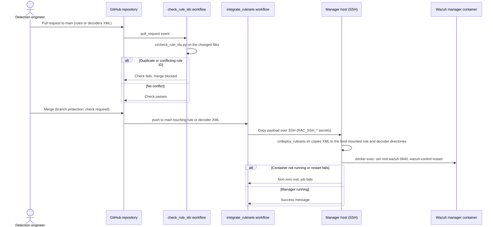
Stages
- Scope. The pipeline covers the XML rule files under
radar/scenarios/rules/<scenario>/and the XML decoder files underradar/scenarios/decoders/<scenario>/. It is a second path for day-to-day rule and decoder changes; full scenario rollouts, CDB lists,ossec.confblocks, agent groups and the rest of a deployment stay with the existing scenario deployment. - Validation on pull request. A workflow triggered by pull requests to
mainrunsci/check_rule_ids.pyas its only validation step. It fails when a changed file defines the same rule ID twice, when a new file reuses a rule ID that exists anywhere onmain, or when a modified file introduces a rule ID that exists in another file onmain. It passes when no rule file changed. - Merge gate. Branch protection on
mainforbids direct pushes and requires thecheck_rule_idsstatus. - Deployment on merge. A workflow (
integrate_rulesets) runs only when a merge changes a rule or decoder XML. It copies the changed files to the manager host over SSH, using the repository secretsRAC_SSH_HOST,RAC_SSH_USER,RAC_SSH_PORT,RAC_SSH_KEY,RAC_MGR_CONTAINER,RAC_HOST_RULES_DIRandRAC_HOST_DECODERS_DIR. - Apply on the host.
ci/deploy_rulesets.shaborts if the manager container is not running; otherwise it copies rules and decoders to the host directories bind-mounted at/var/ossec/etc/rulesand/var/ossec/etc/decoders, setsroot:wazuhand0640inside the container, restarts the manager withwazuh-control restartthroughdocker exec, and reports success or fails the job with a non-zero exit.
Relation to the current implementation
The existing scenario deployment, which the pipeline is to complement, already provides the building blocks for applying rule files to a running manager, through the Wazuh server API rather than through the host's Docker daemon:
radar/wazuh_api/ruleset.pyuploads a rule, decoder or CDB list file (PUT /rules/files/{name},/decoders/files/{name},/lists/files/{name}withoverwrite=true) only when its content differs from the manager's copy, and deletes such files.deploy_ruleset_filesinradar/wazuh_api/scenario_ops.pyuploads a scenario's decoders, rules and lists, together with thedefaultrules, after refusing a scenario whose rules reference a CDB list that has no source file.restart_manager_or_clusterinradar/wazuh_api/manager_config.pyrestarts the manager, or every cluster node, through the API. The same module can query the manager's configuration validation endpoint, which the deployment does not call today.- The rule ID ranges each scenario uses are documented in SWD-034; no tool checks them for conflicts.
Implementation reference
None yet. Foundations: radar/wazuh_api/ruleset.py, radar/wazuh_api/scenario_ops.py, radar/wazuh_api/manager_config.py (deployment control plane, SWD-042).
Parent links: SRS-065 RADAR Ruleset-as-Code
2.20 RADAR endpoint onboarding and agent lifecycle flow LARC-039
This item describes how a Linux endpoint joins a RADAR deployment, changes scenario groups, and leaves it again. Manager-side steps run on the RADAR host, from the command line (radar/radar.sh, radar/radar_deploy/) or from the GUI's Deployment page, which runs the same scripts (LARC-040). Endpoint-side steps run on the endpoint itself, from a copy of the radar/radar-agent/ folder. The RADAR host never connects to an endpoint: enrollment is initiated by the endpoint, and every later configuration change reaches it through its Wazuh agent groups (SRS-069).
The enrollment controls and the token lifecycle are designed in SWD-049, the endpoint package in SWD-048, and the API calls for groups and agents in SWD-047.
Lifecycle stages
| Stage | Runs on | Command line | GUI (Deployment page) | Effect |
|---|---|---|---|---|
| Harden enrollment | RADAR host | radar_deploy/manager-harden-enrollment.sh, run by every build-radar.sh |
every Build | Manager requires an enrollment password (use_password=yes), refuses duplicate names (purge=no), cluster key set, port 1515 closed |
| Mint token | RADAR host | sudo ./radar.sh mint-token <group>[,<group>...] [minutes] |
Agent Management, Onboard agent | New random enrollment password on the manager, revocation scheduled, enrollment window opened for the token's lifetime, bootstrap command printed |
| Enrollment window | RADAR host | sudo ./radar.sh enrollment open [--minutes N] \| close \| status |
Agent Management, Enrollment Window | Opens, closes or reports the firewall window on port 1515, independently of a token |
| Bootstrap | Endpoint | sudo ./bootstrap-agent.sh --manager <addr> --token <t> --group <g> ... |
Command shown for copying | Pinned Wazuh agent installed and enrolled into its groups, active responses and collectors installed, agent started |
| Revoke token | RADAR host | radar_deploy/manager-revoke-token.sh [--if-expired], run by the revocation timer, by build-radar.sh when the manager is already running, and by every health check |
Status (health check) | Enrollment password replaced with an undisclosed random value |
| Assign or unassign groups | RADAR host | radar_deploy/manager-assign-agent-group.sh, manager-unassign-agent-group.sh |
Group Management | Agent added to, or removed from, a scenario's groups through the Wazuh API |
| Deregister | RADAR host | radar_deploy/manager-deregister-agent.sh --agent-name <n> [--no-purge] |
Agent Management, Deregister agent | Agent deleted from the manager; its key is no longer accepted |
| Uninstall | Endpoint | sudo ./uninstall-agent.sh [--purge-data] |
— | RADAR files and the agent package removed; the agent key kept unless --purge-data |
Onboarding sequence
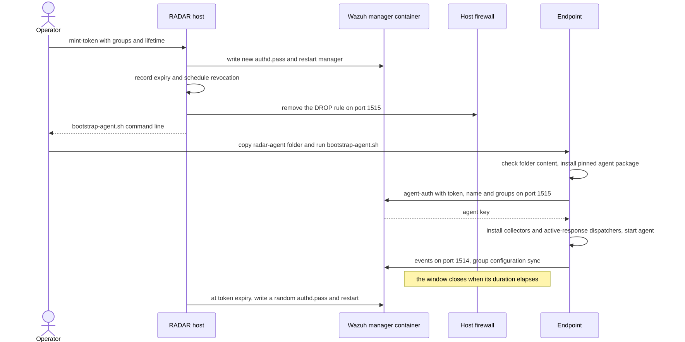
- Mint.
manager-mint-token.shwrites a new random password into the manager'sauthd.pass, restarts the manager so thatauthdreads it, records the expiry on the host and schedules the revocation, then opens the enrollment window for the same number of minutes (1 to 1440). Opening the window needs root; without it the script prints how to open it by hand. The script ends with the command to run on the endpoint, which the GUI extracts and shows separately. - Bootstrap. On the endpoint,
bootstrap-agent.shchecks the folder's catalog, scripts, collectors and helpers before it changes anything, installs and holds the pinned agent package, writes the manager address intoossec.conf, and enrolls withagent-auth, passing the token, the agent name and every requested group. It then installs the collectors of the groups that have one, starts the agent, and installs the whole active-response catalog. The agent receives each group'sagent.confthrough Wazuh's own group synchronisation. - Revoke. When the token's lifetime ends, the revocation timer replaces the password with an undisclosed value and restarts the manager. If the timer did not run (for example after a host reboot), the next health check, or the next
build-radar.shagainst a running manager, does it. Minting a new token replaces the password immediately, so only the newest token is ever valid.
Groups
The groups an agent joins at enrollment are the ones the endpoint passes to agent-auth. The token is a shared enrollment password: it does not restrict which groups the endpoint may request, and the <group> argument of mint-token only shapes the printed command. The GUI mints for default, the selected scenario's group and, for scenarios listed under shared_scenarios in radar/config.yaml, radar_shared.
After enrollment, group membership is changed from the manager only:
- Assign resolves the agent through the Wazuh API, by IP address first and then by name, and adds it to
default, the scenario's group and, for shared scenarios,radar_shared. The result is also recorded inradar/fleet.yaml. - Unassign removes the agent from the scenario's own group only. Its
defaultandradar_sharedmemberships stay. - Undoing a scenario (
radar_deploy/manager-undo-scenario.sh, GUI Undo) removes every agent from the scenario's group, and fromradar_sharedonce no other deployed shared scenario needs it (LARC-024, SWD-047).
Re-enrollment and removal
- Re-running the bootstrap on an enrolled endpoint keeps the existing registration: "Duplicate agent name" from
agent-authis accepted when the endpoint has a key, and the scripts, catalog and collectors are refreshed. - Duplicate name without a key fails, with the hint to deregister the old agent first. The manager never overwrites an existing registration (
purge=no). - Uninstall stops the agent, removes the collectors, the active-response dispatchers and
/var/ossec/radar-agent, uninstalls the package and keeps a root-only copy of the agent key together with the manager address. A later bootstrap for the same agent name and manager restores that key, so the agent keeps its ID and groups.--purge-dataremoves all local state, the kept key included. - Deregistration deletes the agent through the Wazuh API (
DELETE /agents), by default with purge, so that its name can be reused.--no-purgeis available on the command line only; the GUI always purges. An endpoint whose agent is still running tries to enroll again, which only succeeds with a valid token while the window is open.
Webhook agent
The ad-webhook container is an agent too. When build-radar.sh (or the GUI Build) finds it without a key, it mints a 60-minute token for group default and passes it to the container's first start; later starts reuse the stored key.
Constraints
- Minting and revoking each restart the manager, which briefly disconnects all agents: Wazuh's
authdreads its password file only at start. - Opening, closing and querying the enrollment window need root on the RADAR host, because they manage an
iptablesrule. Without root,manager-harden-enrollment.shskips the firewall step. - Only Linux endpoints with
apt-get,yumordnfare supported by the bootstrap and uninstall scripts; the manager-side controls apply to any agent.
See: docs/manual/radar_docs/radar-operations.md#agent-enrollment and docs/manual/radar_docs/radar-getting-started.md#3-onboard-an-endpoint.
Parent links: SRS-023 Agent Registration Process, SRS-067 Secure agent enrollment and automated onboarding, SRS-069 Scenario-scoped agent group configuration delivery
Child links: SWD-042 RADAR deployment control plane, SWD-048 RADAR agent package, SWD-049 RADAR enrollment hardening and token lifecycle
2.21 RADAR GUI request and action flow LARC-040
This item describes how a request from the RADAR web interface travels through the GUI process (radar/gui/app.py) to the files, scripts and APIs that carry it out. The GUI adds no deployment logic of its own: configuration requests read and write the same files as the command line, and deployment actions run the same scripts and wazuh_api calls. The module design (access control details, credential store, file locking) is in SWD-041.
Request flow
- Access checks. Every request, page or API, passes three checks in order: the
Hostheader must name an allowed host, the request must carry the login token (query parameter once, then the HttpOnly cookie) unless authentication is switched off, and a state-changing request must be JSON and not cross-site. A refused API request gets a JSON error; a refused page request plain text. - Pages. The page routes (
/,/active-responses,/connectors,/infrastructure,/deploy) render server-side templates with the data for the first render. Everything after that is a call to an API route from the page's script (radar/gui/static/). - API. Each API group is served by one backend module, listed below. Configuration and credential routes answer in JSON; deployment actions answer with a
text/plainstream.
Route groups and their targets
| Route group | Backend | Reads or writes | Answer |
|---|---|---|---|
/api/scenarios, /api/scenarios/<id>, .../ar-config, .../bind, .../unbind, /api/scenarios/deploy-status |
orchestrator/ar_config.py, wazuh_api/config.py |
ar.yaml (read and write), config.yaml and the scenario rule files (read), the catalog radar-agent/ar-scripts.yaml (read only, for mitigation validation) |
JSON |
/api/connectors, /api/connectors/<name>, .../test, /api/connectors/reveal |
orchestrator/connectors.py |
.env and .certs/; after a save, a filtered copy of .env is copied into the manager as active_responses.env; tests open a connection to the service, some from inside a container |
JSON |
/api/infra/... |
wazuh_api/infra.py |
infra.yaml; the link test runs curl inside the source component's container |
JSON |
/api/sudo/status, unlock, lock |
orchestrator/vault.py |
Process memory only; unlock first checks the password with sudo |
JSON |
/api/logout |
app.py, deploy.py, vault.py |
Stops every running job, clears every stored password and the cookies, then stops the server | JSON |
/api/deploy/<action> |
orchestrator/deploy.py |
Scripts, docker compose and wazuh_api calls, see below |
text/plain stream |
/api/deploy/preview |
orchestrator/deploy.py |
Nothing; returns the commands an action would run | JSON |
Deployment actions
| Action | Runs | Host privilege | Specified in |
|---|---|---|---|
build |
The stages of build-radar.sh (certificates, credentials, core stack, webhook, enrollment hardening, manager-apply-scenario-all.sh), then deploy_scenario_config and deploy_manager_config in-process; on success the scenario is marked deployed (active: true) in ar.yaml |
Yes | LARC-024 |
undo-scenario |
undo_scenario_config and undo_manager_config in-process; the scenario is marked not deployed |
No | LARC-024, SWD-047 |
run |
run-radar.sh <scenario> --ingest true\|false |
No | LARC-015 |
health |
The three health-check stages (not health-radar.sh itself) |
No | LARC-041 |
mint-token, enrollment-window |
radar_deploy/manager-mint-token.sh, manager-enrollment-window.sh |
Yes | LARC-039 |
assign-agent-group, unassign-agent-group, deregister-agent |
radar_deploy/manager-assign-agent-group.sh, manager-unassign-agent-group.sh, manager-deregister-agent.sh |
No | LARC-039 |
teardown |
Only with explicit confirmation: docker compose down for the core and webhook projects; with data removal, also the named volumes and the manager's host-side bind-mount directories from volumes.yml, and every scenario is marked not deployed |
Yes | SRS-070 |
- Validation before spawning. Scenario names are checked against
radar/config.yamland other inputs against their allowed values before any process starts. Because the stream is already open, an invalid input is reported as a line starting with[ERROR]. - Privileged actions. An action that needs host privileges and has no unlocked sudo password for the session is refused before the stream starts, with HTTP 403 and
need_sudo: true; the page then asks for the password, unlocks it, and retries the action once. While the action runs,sudo -Areads the password through an owner-only askpass helper that is deleted when the action ends. - Unprivileged actions authenticate to the Wazuh API and OpenSearch with the credentials in
.env. They need access to the Docker daemon where a script usesdocker exec(health check, token revocation). - Streaming and stopping. Each child process runs in its own session. When the browser stops reading (the page's Stop control aborts the request), the child's process group receives
SIGTERM, thenSIGKILLafter 5 seconds.
Consistency with the command line
The GUI calls the scripts and wazuh_api functions that radar.sh and the entry-point scripts call, with the same arguments, so a deployment made from either interface can be inspected and reversed from the other. The differences are deliberate and small: the GUI's Build records the deployment state in ar.yaml and does not revoke an expired token itself, the GUI always purges on deregistration, and the GUI mints tokens for the selected scenario's full group set.
See: docs/manual/radar_docs/radar-gui-user-manual.md.
Parent links: SRS-063 RADAR SOAR web interface: REST API, SRS-064 RADAR SOAR web interface: frontend, SRS-070 RADAR GUI deployment interface
Child links: SWD-041 RADAR GUI software design
2.22 RADAR deployment health check flow LARC-041
This item describes how a health check of a RADAR deployment runs: which components it reaches, in which order, and how the scenario selection and the registered manager nodes scope it. The check list of each stage and the output format are specified in SWD-040.
Entry points
| Entry point | Runs |
|---|---|
radar/health-radar.sh [--scenario <name\|all>] [--agent-name n1,n2] |
The three stages below, in order, after loading radar/.env |
radar/radar.sh health ... |
health-radar.sh with the same arguments |
GUI, Deployment page, Status tab (/api/deploy/health) |
The same three stages directly, from radar/gui/orchestrator/deploy.py, streamed to the browser (LARC-040) |
None of them needs root. They need access to the Docker daemon (stage 1 uses docker exec) and the Wazuh API and OpenSearch credentials from .env.
Flow
- Token revocation. Before checking anything,
radar_deploy/manager-revoke-token.sh --if-expiredrevokes an enrollment token whose recorded expiry has passed (SWD-049). This is the only change a health check can make; it restarts the manager. - Stage 1, manager containers (
radar/radar_deploy/manager-health.sh). The manager nodes come fromradar/infra.yamlthroughwazuh_api.cli manager-containers, primary node first; with no registered node the stage stops with a non-zero exit status. The webhook container is checked once. Then, for each node, the container state, the active-response and core configuration files, the scenario-specific runtime and enrichment files, and the reachability of OpenSearch and, when configured, DECIPHER from inside that container. Addresses are resolved at run time withwazuh_api.infra(SWD-050). Finally, for the anomaly scenarios that send to the webhook (log_volume,linux_resource_utilization), the webhook URL is probed from inside the indexer container. - Stage 2, Wazuh API, OpenSearch and webhook (
wazuh_api.cli manager-health-api,radar/wazuh_api/health.py). If the manager runs as a cluster, the daemon status and the scenarioossec.confmarkers are checked per cluster node, as reported by the API; otherwise on the single manager. Then, for the selected scenarios: group configuration, decoder, rule and list files, and the agents that are members of all of the scenario's groups. Last, the OpenSearch cluster health (with thelog_volumeindex template) and the webhook URL, both from the RADAR host. - Stage 3, named agents (
wazuh_api.cli agent-health), only when agent names are given: each agent's registration and connection status, and its membership ofdefaultand, unless all scenarios were selected, of the named scenario's group. No connection is made to the endpoint.
Scenario scoping
The scenario selection decides which scenario-dependent checks run. Checks without a scenario dependency always run.
| Check | Stage | Runs when the selection includes |
|---|---|---|
Manager framework Python and maxminddb |
1 | suspicious_login or geoip_detection |
| Enrichment integration files, GeoLite2 databases, user state store, enrichment error log | 1 | suspicious_login |
| Filebeat archives pipeline patch | 1 | log_volume |
| Webhook reachable from the indexer container | 1 | log_volume or linux_resource_utilization (and WEBHOOK_URL set) |
Scenario ossec.conf block present |
2 | each selected scenario with an entry in the health module's ruleset table |
Scenario group configuration non-empty (or radar_shared for shared scenarios) |
2 | each selected scenario |
| Decoder and rule files | 2 | each selected scenario, from the health module's ruleset table |
whitelist_countries list |
2 | geoip_detection |
| Agents in all of the scenario's groups | 2 | each selected scenario |
radar-log-volume index template |
2 | log_volume (and OS_URL set) |
| Agent in the named scenario's group | 3 | a single named scenario |
With --scenario all, the selection is every scenario listed in radar/config.yaml (wazuh_api.cli list-scenarios), whether or not it is deployed. Scenarios that are not deployed therefore report FAIL lines; to check a partial deployment, run one check per deployed scenario.
Results and exit status
Each stage prints its lines as it produces them, prefixed OK, WARN, FAIL or SKIP. A FAIL line does not change a stage's exit status: a stage exits non-zero only when it could not run (no registered manager node, or a Wazuh API error such as failed authentication). health-radar.sh stops at the first stage that exits non-zero, so the later stages are not run; the GUI's Status tab runs all three stages regardless.
Known gaps
- The enrichment checks of stage 1 are gated on
suspicious_loginonly, althoughgeoip_detectionuses the same GeoLite2 databases and its own web enrichment integration (SWD-040). - The decoder and rule files checked in stage 2 come from a table in
radar/wazuh_api/health.py, not fromradar/scenarios/; a file added to a scenario must be added there too to be checked.
See: docs/manual/radar_docs/radar-operations.md#health-check.
Parent links: SRS-060 RADAR deployment health check
Child links: SWD-040 RADAR health check software design
2.23 RADAR test workflow LARC-042
This item describes how a RADAR scenario is tested: the live workflow that exercises a real deployment end to end (setup, ingest, simulate, check, evaluate), and the automated suites that test the RADAR code without a deployment. The live workflow reuses the deployment tooling for setup and ingest; only the simulation and the live checks are test-specific code, in the RADAR Automated Test Framework (radar/radar-test-framework/, HARC-005).
Live workflow
| Phase | Implemented by | Runs on | Design |
|---|---|---|---|
| Setup | radar/build-radar.sh <scenario> or the GUI's Scenario Management (LARC-024, LARC-040) |
RADAR host | SWD-019 |
| Onboarding | radar.sh mint-token, then radar-agent/bootstrap-agent.sh (LARC-039) |
RADAR host, then endpoint | SWD-019, SWD-048 |
| Readiness | radar/health-radar.sh --scenario <s> --agent-name <endpoint> (LARC-041) |
RADAR host | SWD-040 |
| Ingest and detector | radar/run-radar.sh <scenario> --ingest true or the GUI's Anomaly Detector tab, for scenarios with radar/scenarios/ingest_scripts/<scenario>/wazuh_ingest.py |
RADAR host (radar-cli container) |
SWD-018 |
| Simulate | One standalone script per scenario in radar/radar-test-framework/simulate/scenarios/, copied to the endpoint and run there |
Endpoint | SWD-020, SWD-039 |
| Anomaly injection | simulate/scenarios/inject_ad_alert.py, which posts one off-hours anomaly to the webhook for fusion tests |
RADAR host | SWD-039 |
| Live checks | radar/radar-test-framework/checks/off_hours_phase0.py, off_hours_simulate.py, off_hours_rule_e2e.py, off_hours_model_history.py, against the indexer |
RADAR host | SWD-039 |
| Verify | The operator, against the rule IDs each simulation case prints | — | SWD-020 |
| Evaluate | Not implemented | — | SWD-021 (planned) |
- Setup deploys the scenario on the manager, exactly as in production.
- Onboarding enrolls a test endpoint into the scenario's groups and installs its active responses and collector.
- Readiness confirms the deployment and the endpoint's groups before anything is simulated.
- Ingest applies only to the scenarios that use the OpenSearch anomaly-detection plugin and ship an ingest script (
log_volume,linux_resource_utilization,suspicious_login): it seeds the detector's indices with synthetic history, then creates and starts the detector and monitor, so the detector has a baseline before the simulation. - Simulate writes the scenario's real artefact on the endpoint (log lines, Suricata records, filesystem growth, CPU or memory load). The events travel the production path; the simulator writes nothing to the indexer. Case-based scripts pause after each case for the operator to check the dashboard, unless run with
-b. - Live checks cover what the endpoint cannot observe: the off-hours marking pipeline and the rule and model modes of
suspicious_login. Each prints pass or fail per case and exits non-zero on failure. - Verify is manual today: the operator compares the alerts, active-response log entries, notification email and, if DECIPHER is configured, the incident case with the rule IDs the script printed as expected present and absent.
Automated suites
The RADAR code is also tested without a deployment, by radar/tests/run-tests.sh. These tests are separate from the repository-level tests/ tree, which covers SONAR and ADBox.
| Suite | Location | What it isolates |
|---|---|---|
| Shell lint | shellcheck over the entry-point, agent, helper, active-response and collector scripts |
Skipped when shellcheck is not installed |
| Python compile | py_compile of the anomaly-detector modules |
— |
| pytest | radar/tests/py/ |
Wazuh and OpenSearch HTTP calls mocked with responses; scripts run in sandboxes with stubbed docker; simulation scripts run against temporary files |
| bats | radar/tests/bash/{build-radar,run-radar,bootstrap-agent,uninstall-agent,ar-mapping,ar-dispatch,collectors}.bats |
System commands (docker, systemctl, package managers, agent-auth) replaced by stubs, from radar/tests/bash/stubs/ or written by each test into a fake root |
radar/test.sh builds radar/Dockerfile.test (Python, bats, jq, shellcheck) and runs run-tests.sh inside it, so the suites run the same way on any host with Docker. radar/tests/bash/simulate-radar.bats, which tests linux_resource_utilization.sh, is not in the run-tests.sh list and is run on its own.
The automated suites verify the logic of each component; only the live workflow verifies that a deployed scenario detects and responds.
Planned extensions
Status: planned. Not implemented as of v2.2.0. The extensions below specify intended behaviour; no code implements them yet.
- Evaluation: retrieve the detection results of a simulation run from the indexer, compare them with each case's expected outcome and compute detection metrics into a machine-readable report (SWD-021).
- Single orchestrated run: one entry point that sequences setup, ingest, simulation and evaluation without manual steps.
See: radar/radar-test-framework/README.md and docs/manual/radar_docs/radar-operations.md#testing-detections.
Parent links: SRS-054 RADAR automated test framework, SRS-059 RADAR scenario simulation framework
Child links: SWD-018 RADAR baseline history ingestion, SWD-019 RADAR test environment setup, SWD-020 RATF: simulation phase, SWD-021 RATF: evaluation phase, SWD-039 RADAR simulation framework software design
3.0 ADBox v1 Low-Level Architecture (Maintenance)
Low-level architecture for ADBox v1 (MTAD-GAT legacy system) - maintenance mode only.
3.1 ADBox training pipeline flow LARC-001
Training pipeline flow diagram
The diagram summarizes the flow of the training pipeline orchestrated by the ADBox Engine.
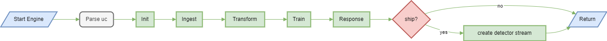
Parent links: SRS-038 Joint Host-Network Training
Child links: SWD-001 ADBox training pipeline
3.2 ADBox historical data prediction pipeline flow LARC-002
Prediction pipeline flow diagram for historical (offline) run mode
The diagram summarizes the flow of the predict pipeline for historical (offline) runmode orchestrated by the ADBox Engine.
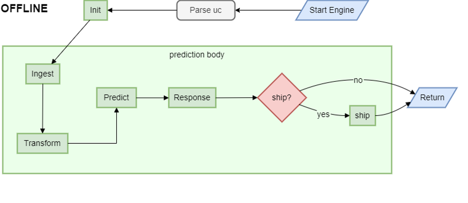
Parent links: SRS-035 Offline Anomaly Detection
Child links: SWD-002 ADBox prediction pipeline, SWD-013 ADBox Prediction pipeline's inner body
3.3 ADBox preprocessing flow LARC-003
Preprocessing flow diagram of ADBox data transformer
The diagram summarizes the flow of the method Preprocessor.preprocessing by the ADBox Data Transformer.
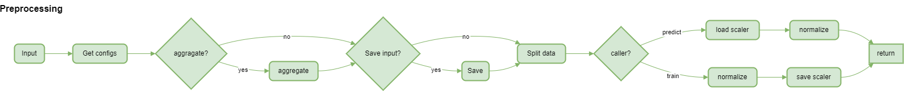
Parent links: SRS-029 Host & Network Ingestion
Child links: SWD-010 ADBox data transformer, SWD-011 ADBox preprocessing
3.4 ADBox batch and real-time prediction flow LARC-008
Batch and real-time ADBox run modes prediction flow diagrams
The diagram summarizes the flow of the prediction pipeline for online run modes orchestrated by the ADBox Engine.
Specifically,
-
batch mode runs the loop every batch interval,
-
real-time mode runs the loop every granularity interval.
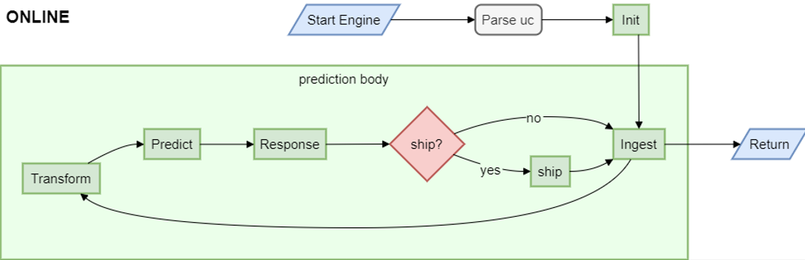
Parent links: SRS-027 ML-Based Anomaly Detection
Child links: SWD-002 ADBox prediction pipeline, SWD-013 ADBox Prediction pipeline's inner body
3.5 ADBox machine learning package LARC-009
ADBox machine learning package diagram
ADBox ML-packages folder containing the machine learning packages called by the AD pipelines.
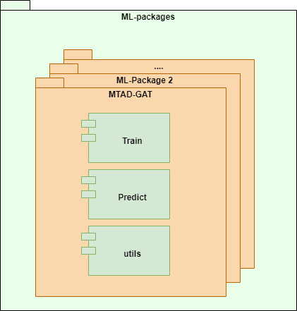
Parent links: SRS-039 Algorithm Selection Option
Child links: SWD-003 MTAD-GAT training, SWD-004 MTAD-GAT prediction, SWD-005 Peak-over-threshold (POT), SWD-006 ADBox Predictor score computation, SWD-007 ADBox MTAD-GAT anomaly prediction, SWD-008 ADBox MTAD-GAT Predictor
3.6 ADBox data manager LARC-010
ADBox data manager diagram
The diagram below depicts the ADBox Data Manager.
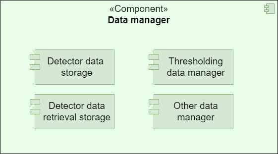
Parent links: SRS-040 Data Management Subpackage
Child links: SWD-009 ADBox data managers
3.7 ADBox TimeManager LARC-011
ADBox TimeManager context diagram
The diagram below depicts the ADBox TimeManager.
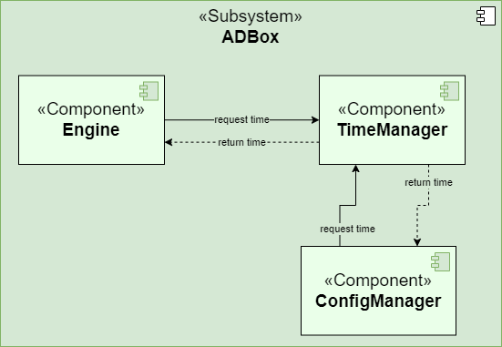
Parent links: SRS-041 Time Management Package
Child links: SWD-012 ADBox TimeManager
3.8 ADBox ConfigManager LARC-012
ADBox ConfigManager context diagram
The diagram below depicts the ADBox ConfigManager.
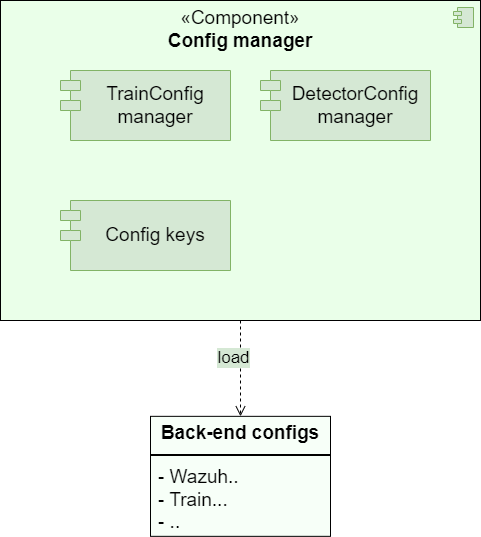
Parent links: SRS-018 ML Hyperparameter Tuning, SRS-021 Default Use Case Update
Child links: SWD-014 ADBox config managers
3.9 ADBox RequestResponseHandler LARC-013
ADBox RequestResponseHandler context diagram
The diagram below depicts the ADBox RequestResponse Handler subpackage.
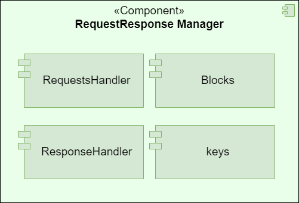
Parent links: SRS-042 Prediction Shipping Feature
3.10 ADBox Shipper LARC-014
ADBox Shipper context diagram
The diagram below depicts the ADBox Shipper subpackage.
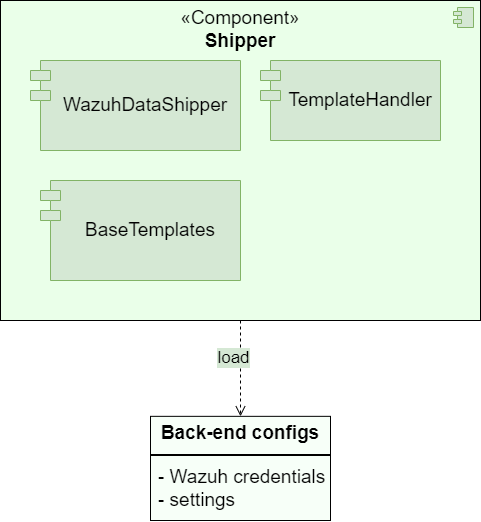
Parent links: SRS-042 Prediction Shipping Feature
Child links: SWD-015 ADBox Shipper and Template Handler, SWD-016 ADBox shipping of prediction data, SWD-017 ADBox creation of a detector stream
4.0 Infrastructure Low-Level Architecture
Low-level architecture for deployment, integration, and system-wide infrastructure.
4.1 IDPS-ESCAPE end-point integrated arch. LARC-004
IDPS-ESCAPE end-point integrated architecture diagram
The diagram illustrates the architecture of IDPS-ESCAPE end-point integrated model.
Parent links: SRS-005 Network Monitoring Control, SRS-008 Dockerized NIDS Deployment, SRS-010 Centralized Threat Management, SRS-033 Remote Endpoint Deployment
4.2 IDPS-ESCAPE end-point hybrid arch. LARC-005
IDPS-ESCAPE end-point hybrid model architecture diagram
The diagram illustrates the architecture of IDPS-ESCAPE end-point hybrid model.
Parent links: SRS-005 Network Monitoring Control, SRS-007 Raw Traffic Capture, SRS-033 Remote Endpoint Deployment
4.3 IDPS-ESCAPE end-point host-only IDS arch. LARC-006
IDPS-ESCAPE end-point host-only IDS model architecture diagram
The diagram illustrates the architecture of IDPS-ESCAPE end-point HIDS only model.
Parent links: SRS-003 HIDS Agent Deployment, SRS-009 Signature-Based HIDS, SRS-033 Remote Endpoint Deployment
4.4 IDPS-ESCAPE end-point capture-only arch. LARC-007
IDPS-ESCAPE end-point capture-only model architecture diagram
The diagram illustrates the architecture of IDPS-ESCAPE end-point capture only model.
Parent links: SRS-007 Raw Traffic Capture, SRS-033 Remote Endpoint Deployment
4.5 C&C server deployment architecture LARC-034
This item describes how the command-and-control (C&C) server of IDPS-ESCAPE is deployed on one Docker host by RADAR: the containers, their ports and storage, the credentials and certificates they share, and the order in which radar/build-radar.sh brings them up. It implements SRS-001 (centralized C&C deployment), SRS-004 (agent management), SRS-011 and SRS-012 (event visualization in the dashboard), SRS-013 (agent status panel), SRS-016 (indexer credentials), SRS-024 (event querying through the indexer and Wazuh API), SRS-044 (platform-independent, containerised deployment), SRS-083 (component channels), SRS-084 (storage on the C&C host) and SRS-085 (fleet monitoring).
Deployment view
Containers
| Container | Defined in | Image | Published ports | Role |
|---|---|---|---|---|
wazuh.manager |
radar/docker-compose.core.yml |
wazuh/wazuh-manager:4.14.1 |
1514/tcp, 1515/tcp, 514/udp, 55000/tcp | Agent events and enrollment, syslog, Wazuh API; Filebeat ships alerts and archives to the indexer |
wazuh.indexer |
radar/docker-compose.core.yml |
wazuh/wazuh-indexer:4.14.1 |
9200/tcp | OpenSearch storage, anomaly detectors and alerting monitors |
wazuh.dashboard |
radar/docker-compose.core.yml |
wazuh/wazuh-dashboard:4.14.1 |
443/tcp (container 5601) | Web interface for analysts |
ad-webhook |
radar/docker-compose.webhook.yml |
built from radar/webhook/ |
8080/tcp (WEBHOOK_INTERNAL_PORT) |
Receives indexer monitor notifications and forwards them to the manager through its own Wazuh agent |
sonar (optional) |
sonar/wazuh/docker-compose.sonar.yml |
sonar:v0.8 |
none | SONAR real-time scenario; reads alerts from the indexer and writes anomalies to a directory the manager reads |
The indexer and Wazuh API ports are published on RADAR_MGMT_BIND_ADDRESS and the webhook on WEBHOOK_BIND_ADDRESS (both 0.0.0.0 by default, see radar/env.example). The RADAR GUI (radar/gui/) is not a container of the stack; it listens on 127.0.0.1:5000 and is reached through an SSH tunnel. The recommended host firewall rules for each port are listed in radar/README.md ("Security assumptions and recommendations").
The webhook is built only when a scenario is deployed; build-radar.sh --core-only brings up the three core containers alone. SONAR is not started by build-radar.sh; it is added as a compose overlay or started with sonar/sonar.sh.
Configuration, credentials and certificates
All files are relative to radar/.
| Item | Content | Produced by |
|---|---|---|
.env |
Addresses, users and passwords of the indexer, dashboard and Wazuh API, webhook secret, cluster key, SMTP, DECIPHER and MaxMind settings (template: env.example) |
Operator; passwords, WEBHOOK_SHARED_SECRET and WAZUH_CLUSTER_KEY are generated when empty |
.radar-generated/internal_users.yml |
Password hashes of the indexer users admin and kibanaserver, mounted into the indexer |
wazuh_api/credentials.py |
.radar-generated/wazuh.yml |
Wazuh API host and credentials, mounted into the dashboard | wazuh_api/credentials.py |
config/wazuh_indexer_ssl_certs/ |
Root CA and certificates of the indexer, manager (Filebeat), dashboard and indexer admin | radar_deploy/manager-ensure-certs.sh (wazuh/wazuh-certs-generator:0.0.2, from config/certs.yml) |
volumes.yml |
Host bind mounts of each manager container (by default under /srv/wazuh/manager/) |
Shipped; edited for an existing installation |
infra.yaml |
Registered manager and indexer nodes (primary first) and the dashboard, with container names, hosts, ports and schemes | wazuh_api/infra.py, RADAR GUI Infrastructure page |
.radar-state/ |
Enrollment token expiry, backup of .env before a credential rotation |
radar_deploy/manager-mint-token.sh, wazuh_api/credentials.py |
fleet.yaml |
Agents assigned to scenario groups, with IDs, groups and last action | wazuh_api/fleet.py |
The core compose file refuses to start when OS_PASS, WAZUH_AUTH_PASS or INDEXER_DASHBOARD_PASSWORD is unset, so the stack never runs with an empty password. credentials.py generates the passwords only for a fresh deployment, detected by the absence of the wazuh-indexer-data volume; on an existing deployment it leaves them unchanged and warns if stock Wazuh passwords are still in use. radar.sh rotate-credentials (radar_deploy/manager-rotate-credentials.sh) replaces them later.
Build sequence
build-radar.sh <scenario> or build-radar.sh --core-only:
- Loads
.env, and stops if it is missing. - If the manager container is not running:
- creates the certificates if none exist (
manager-ensure-certs.sh); - generates missing credentials and writes
.radar-generated/(python3 -m wazuh_api.credentials ensure); - derives a compose overlay from
volumes.ymlfor the services of the core compose file (python3 -m wazuh_api.cli core-volumes-overlay), creates the missing host directories with mode0750, and seeds the archives ingest pipeline file; - runs
docker compose -f docker-compose.core.yml -f - up -dwith that overlay.
If the manager is already running, it only revokes an expired enrollment token.
3. Registers the RADAR-built components in infra.yaml.
4. For a scenario: generates WEBHOOK_SHARED_SECRET if empty, resolves the manager address the webhook enrolls against, mints a 60-minute enrollment token unless the webhook is already enrolled, and builds and starts the webhook.
5. Waits for the Wazuh API, then hardens enrollment (radar_deploy/manager-harden-enrollment.sh): password-only enrollment, no purge of agent keys, the cluster key set from .env or generated, and the DOCKER-USER rule that drops traffic to port 1515 put back in place (radar_deploy/manager-enrollment-window.sh close, when run as root).
6. With --core-only, stops here. Otherwise it applies the scenario to every registered manager node (radar_deploy/manager-apply-scenario-all.sh) and deploys the scenario's agent-group configuration, decoders, rules and lists through the Wazuh API.
Agent management
Endpoints are onboarded with radar/radar-agent/bootstrap-agent.sh and a token minted on the C&C host (radar.sh mint-token, i.e. radar_deploy/manager-mint-token.sh), which also opens the enrollment window for the token's lifetime. Scenario groups are assigned with radar_deploy/manager-assign-agent-group.sh or python3 -m wazuh_api.cli assign-hosts-to-groups, which records the result in fleet.yaml; groups are removed with manager-unassign-agent-group.sh and agents deleted from the manager with manager-deregister-agent.sh. The same operations are available in the RADAR GUI.
Existing Wazuh installation
When RADAR is attached to an existing Wazuh installation, no core containers are created and no passwords are generated: the operator registers the existing manager nodes, indexer and dashboard in infra.yaml, enters their credentials in .env, and maps each manager's bind mounts in volumes.yml. Manager-side files are then written through those host paths and docker exec, so RADAR runs on the host of the manager containers. See: docs/manual/radar_docs/radar-getting-started.md#working-with-an-existing-wazuh-installation.
See also
docs/manual/radar_docs/radar-getting-started.mddocs/manual/radar_docs/radar-operations.mdradar/README.md("Security assumptions and recommendations")
Parent links: SRS-001 Centralized C&C Deployment, SRS-004 HIDS Agent Management, SRS-011 Network Event Visualization, SRS-012 Host Event Visualization, SRS-013 HIDS Agent Status Panel, SRS-016 Indexer Credential Management, SRS-024 Event Querying Capability, SRS-044 Platform-Independent Deployment, SRS-083 Authenticated and encrypted component channels, SRS-084 Alert and anomaly storage on the C&C host, SRS-085 Monitoring a fleet of endpoints, SRS-087 SONAR container image contains only SONAR
Child links: SWD-050 RADAR infrastructure registry, address resolution and credentials